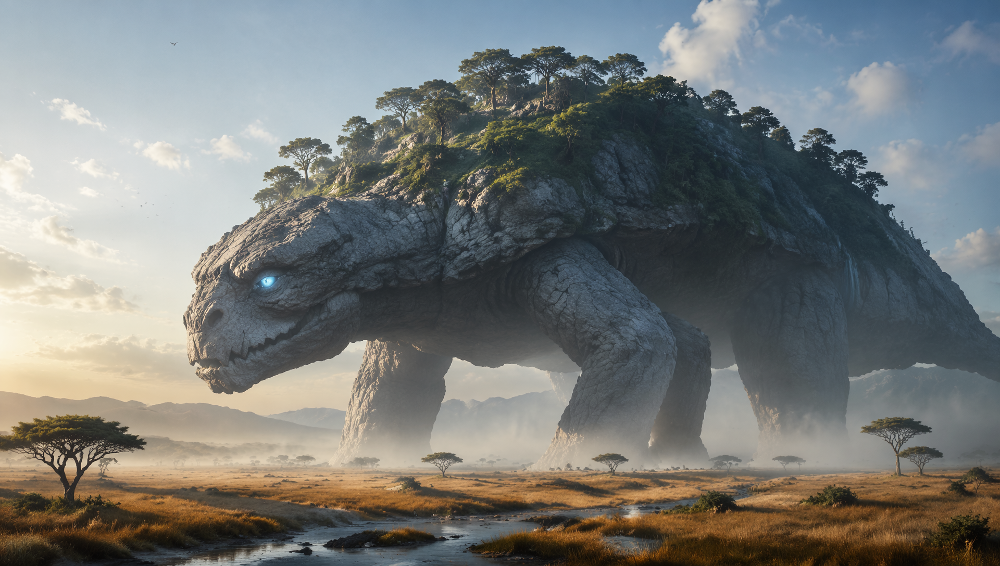
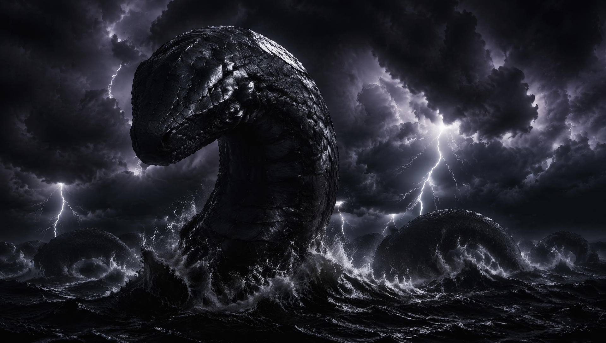
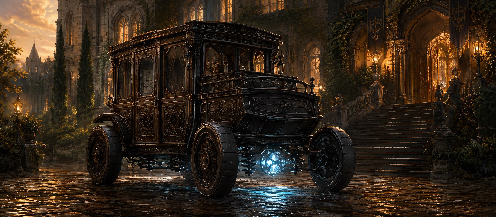
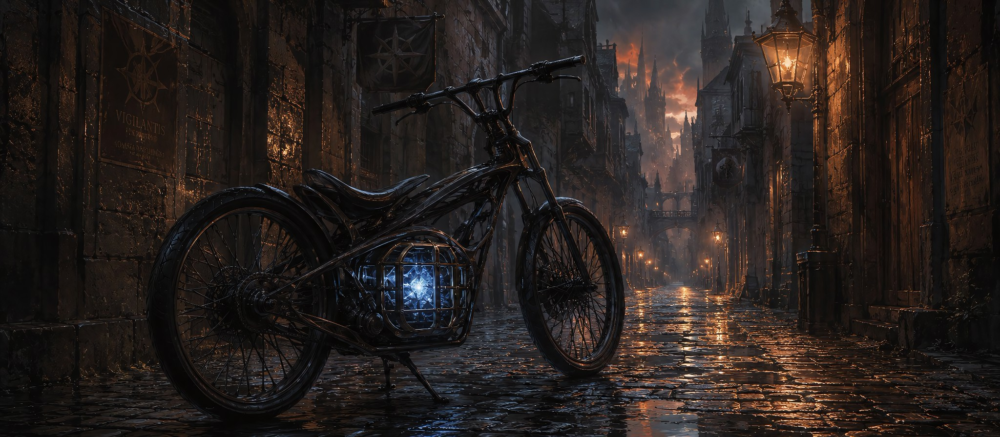
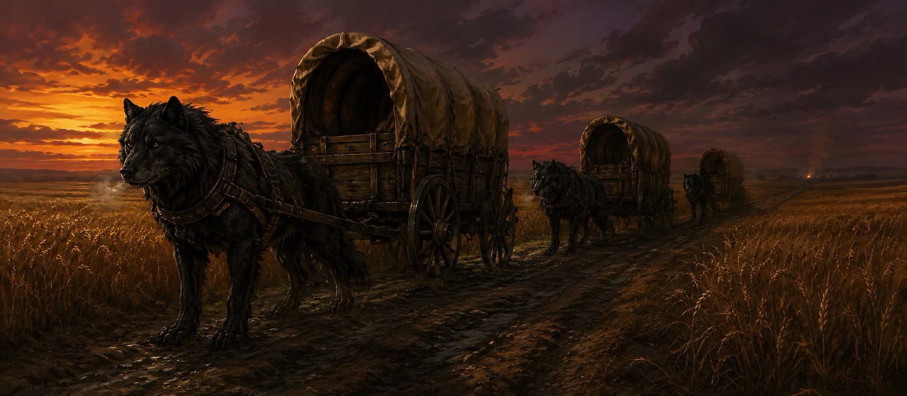
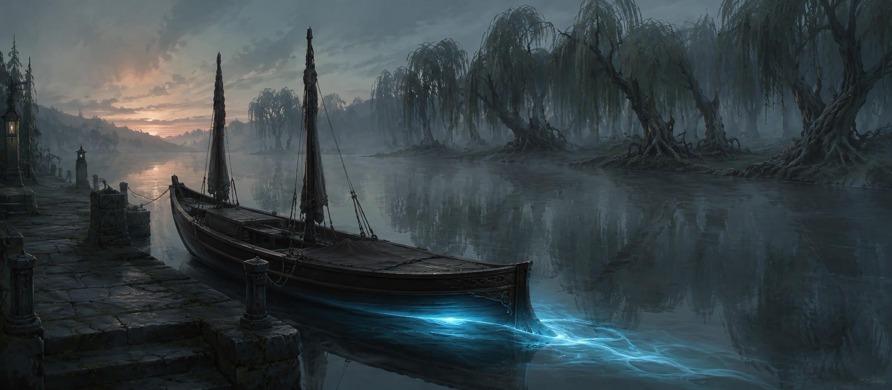
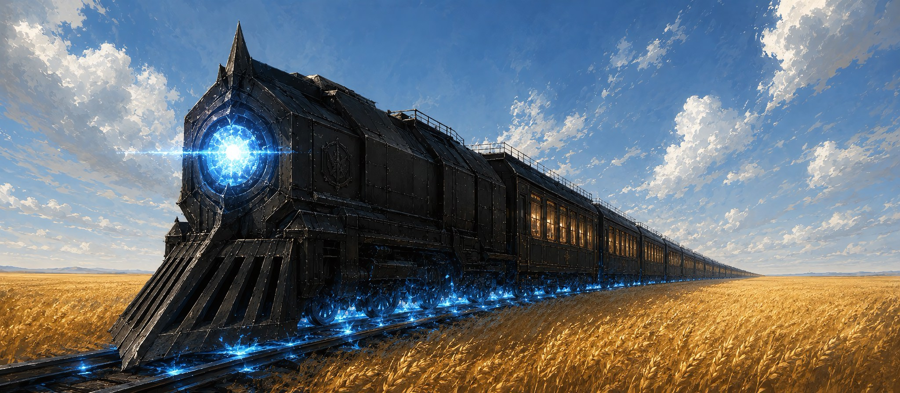
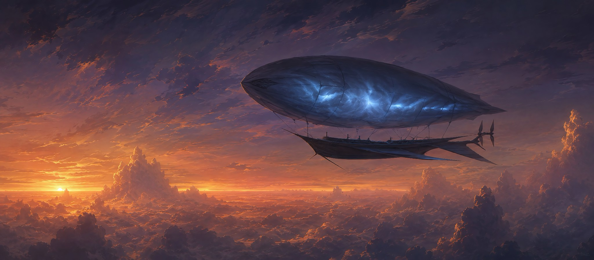
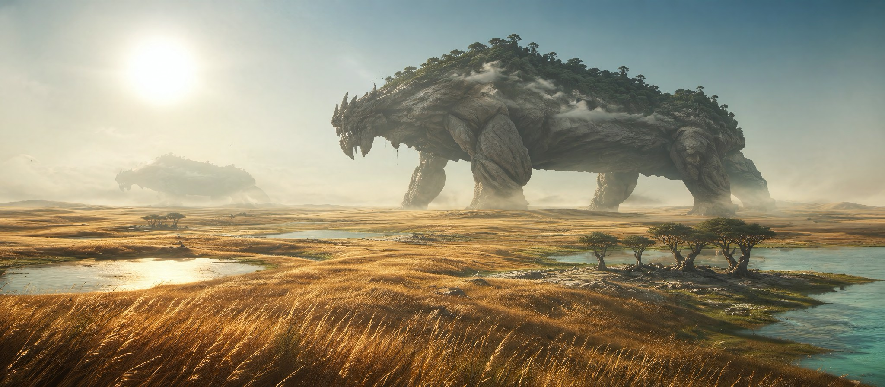
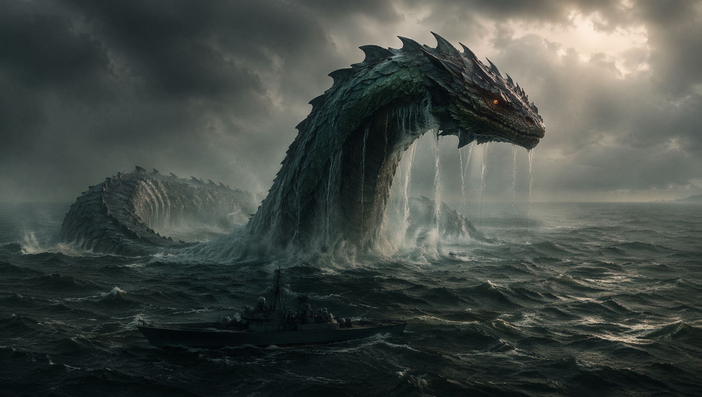

A world born not from love, but from necessity.
A lifeboat built on the bones of a ruined era.
Countless gods went to war. Five survived. One world remained.
I. THE RUINEA CHRONICLES
The Primordial Era: The War of Attrition
Long before the dawn of mortal history, the world was a borderless realm ruled by dozens of godlike entities and ancient races. Beings whose names have been erased from memory, whose forms were concepts rather than flesh. Greed for absolute dominion eventually ignited The Great Shattering, an apocalyptic conflict also known as the War of the Gods. Reality itself was torn asunder as divine weapons shattered continents and erased entire bloodlines from existence.
Forced Genesis: The Silent Consensus
When the dust of divine war finally settled, only five goddesses remained. Realizing that continuing their conflict would guarantee total annihilation, not just of themselves but of all remaining life, they forged a bitter, silent truce. With the absolute last reserves of their divine authority, they became the reluctant creators of a new world.
The Grafting: The Five forcibly fused the shattered remnants of the Old World into a single, finite continent. The seams where these fragments meet would forever remain unstable, bleeding magic, radiation, and the grudges of a dead era.
The Great Slumber: Exhausted beyond measure, the goddesses buried themselves deep within the earth. They became the world's bones, its gravity, and its heartbeat.
◆ The Sweet Myth
The world was born from the perfect harmony of the Five Goddesses, a beautiful gift created out of love for their descendants.
◆ The Dark Truth
Ruinea is a stitched-together, radioactive corpse of a ruined era. Its skies bleed auroras. Its soil remembers death. The goddesses did not create a paradise. They built a lifeboat, and the lifeboat is leaking.
The Stitched World: Scale & Scope
Ruinea is a finite continent surrounded on all sides by ocean, and beyond that, the Void, the absolute physical edge of reality where existence itself ceases. The total landmass spans approximately 180 million square kilometers.
- Sovereign Domains (~74%): Conquered, civilized, and claimed by nations. Roads are paved. Laws are enforced. The myth of a harmonious world still holds.
- Untamed Frontiers (~26%): Wilderness, unstable Seam Zones, and dead regions where even monsters refuse to tread. These are not empty lands waiting to be claimed, but wounds that have not yet finished bleeding.
Above, the sky is periodically illuminated by a cracked aurora, a permanent scar revealing the shattered limits of the Old World.
The Cardinal Axis: A World in Four Directions
Imagine standing at the heart of Ruinea, the fertile Valley of Kings, with the gleaming spires of Aethelburg rising behind you. From here, the world stretches out in every direction.
The Vorn Mountains
A titanic, snow-capped wall stretching across the northern horizon. Its peaks hide Dragon Nest, the Dwarven realms of Kazad-Vorn and Vorn-Taraz, and the Orc fortress of Gar-Vang. A constant, eerie hum, the Giant's Breath, echoes through the stone. From its glaciers, three great rivers are born.
The Iron Valley, Seam Zone & Black Domain
Beyond the Valley of Kings lie the crimson-stained Western Hills and the mercenary city of Ferrostad. Further west, the Western Seam Zone awaits, a toxic wasteland where reality has broken apart, guarded fiercely by the Theocracy. At the continent's edge sprawls the Black Domain, where demons dwell and the First King slumbers beneath Malakh-Kar.
The Grasslands & Eastern Seam Zone
Beyond the Eastern Hills, civilization begins to thin. The nomadic Werebeasts of The Pack roam the endless golden savanna, following herds and the colossal Walking Mountains. Further east lies the Eastern Seam Zone, the most dungeon rich region in the world, where only the bravest Guildhall expeditions dare to tread.
The Primeval Forest & Noctisia
The ancient, singing woodland of the Primeval Forest dominates the south. It is home to the memory keeping Elves of Aelderim, the pacifist Werebeasts of Verdantus, and the progressive Elves of Sol-Ventari. Beyond the forest, across the Southern Sea, the vampire island of Noctisia hides behind its sentient Guardian Mist.
For detailed geography, including rivers, Seam Zones, seas, and the Void, see Section IV: Geography.
The World's Immune System
Ruinea is a living, wounded entity that remembers its death. The goddess Nyxara created an immune system: a vast ecology of predators designed to protect the stitched reality from threats both foreign and ancient. Surface monsters hunt and kill. When Dungeon spawn appear, these foreign infections born from the grudges of the Old World, surface monsters attack them on sight. This is the Law of Antipathy: not cooperation, but instinct. An immune response.
Behemoths: Guardians of the Land

Nyxara's immune system given flesh and stone: living geological titans, neither monsters nor gods. No two are identical. Their skin is made of living granite, cooled magma, ancient bark, or packed earth. Entire forests grow on their backs. Their eyes glow with faint Aether light, half closed as if dreaming. A low hum vibrates for kilometers. Pure Behemoths radiate ancient calm; Corrupted ones shriek, their skin cracking to reveal infected Aether flesh. They range from 15 meters to over 50 kilometers in length. The largest, the Walking Mountains, are so vast that forests, lakes, and entire ecosystems thrive upon their backs. Their footsteps carve valleys. Their sleep lasts millennia.
Leviathans: Guardians of the Sea

The combined will of all Five Goddesses woven into living form. Serpentine titans whose coils stretch from horizon to horizon. Their scales are harder than iron. Their eyes are like dying suns, or absent entirely. They patrol the Black Zone and the Void's edge with ancient, unwavering purpose. They do not hunt. They do not chase. They simply rise, and then the ship is no longer there. The largest, called the World Enders, measure 10 to 30 kilometers in length. Fewer than seven exist. They circle the Void itself, silhouettes against the nothingness. They are the world's last wall. Whatever lies beyond the Void, the Leviathans ensure it stays there.
Travel, Infrastructure & Commerce
Infrastructure
Paved roads are standard across all sovereign nations, maintained as vital economic and military arteries. The Valdran Empire and Vorn-Taraz boast the finest highways, wide, smooth, and heavily patrolled. Theocracy and Gar-Vang roads are functional but rugged, built for war rather than commerce. The Black Domain has only shattered remnants of Old World routes.
Technology Level
Ruinea operates on medieval magicraft. There is no gunpowder. No fossil fuels. No internal combustion engines. Everything runs on Aether Cores, crystallized magical energy harvested from monsters and dungeons, supplemented by muscle and beast.
Daily Technology
Commoners use low grade Aether Cores for perpetual light crystals in homes and streets, portable heat stones for cooking and warmth, and basic food preservation. The wealthy and nobles use high grade cores for climate controlled estates and private Aether vehicles. Aether Mirrors, capable of real time audiovisual communication, are exceedingly rare. Only Pope Callista, the Valdran Emperor, the Guildhall Council of Masters, and certain elite nobles possess them.
Transportation

Aether Wagons are the backbone of long distance land travel across all sovereign nations. These personal vehicles travel at 40 to 60 kilometers per hour on paved roads, expensive, and used by nobles, wealthy merchants, and Guildhall officials. Luxury models serve the elite, while rugged utilitarian variants haul cargo and soldiers along the great highways.

Aether Cycles are two wheeled personal speedsters capable of 60 to 80 kilometers per hour. They are used by couriers, elite messengers, and adventurers in a hurry. Lightweight and agile, they can navigate terrain that would bog down heavier vehicles.

Beast Caravans remain the transport of the common folk. Monster drawn carts pulled by dire wolves, Stone Rams, and domesticated herbivores travel at 30 to 40 kilometers per day along trade routes. They are slower but reliable, and they require no Aether Cores to operate.

Aether Skiffs are river and coastal vessels powered by Aether Cores. They travel at 20 to 30 kilometers per hour on rivers and 40 to 50 kilometers per hour at sea. The bulk of continental trade moves by water, with barges carrying grain, iron, and timber along the great rivers.
The Iron Serpent

The Iron Serpent is the backbone of continental logistics. These massive Aether powered locomotives run on Dwarven rails at 80 to 100 kilometers per hour, connecting every major city across Vorn-Taraz, Guildhall and Valdran Empire. The network was designed and built by Vorn-Taraz engineers, and it is patrolled by the Rail Wardens, an elite multi national guard who protect the trains from monster attacks and sabotage. The rails themselves are maintained by Track Tenders, Dwarven engineers who consider their work a sacred calling. To sabotage a rail line is to insult the entire Dwarven race.
Skyships

Skyships are light Aether lifted airships capable of 50 to 70 kilometers per hour. They are extremely rare. Fewer than five are known to exist across the entire continent. Their use is restricted to Guildhall deep expedition support, Theocracy reconnaissance over the Western Seam Zone, and absolute emergencies. To see a Skyship on the horizon is to know that something significant is happening, or something terrible has already occurred.
Currency
Universal and valid worldwide. Coinage is minted by the Valdran Empire but accepted everywhere, even the Black Domain, where it buys smuggled food and silence.
| Coin | Exchange Rate |
|---|---|
| Copper Coin | Base unit |
| Silver Coin | 10 Copper = 1 Silver |
| Gold Coin | 100 Silver = 1 Gold |
| Aethel Coin | 1,000 Gold = 1 Aethel |
Gold buys goods. Aether Cores buy survival. The true currency of power in Ruinea is energy, and energy comes from the dead.
II. THE FIVE GODDESSES
Before the Great Shattering, dozens of divine entities walked the Old World. By the time the dust of the War of the Gods settled, only five remained. These five goddesses, wounded, exhausted, and burdened by the weight of their own survival, became the reluctant creators of Ruinea.

ETHERIA : The Law of Spatial Stability Tap to Expand
Domain: Earth's core, gravity, and the physical integrity of the world.
The Law: The world is finite. It cannot grow, expand, or be added to. The land shall hold together by her eternal will, and nothing shall cause it to dissipate into the Void.
ETHERIA is the architect of the continent's physical form. Every mountain range is a scar from her stitching. Every Seam Zone is a wound she could not fully close.

VALERION : The Law of Linear Time Tap to Expand
Domain: The flow of time, the irreversibility of moments.
The Law: The past cannot be repeated. It cannot be changed. Regrets are permanent. Time flows only forward, and what is done is done.
Valerion's Law is the cruelest mercy. In the Old World, gods could rewind time, undo mistakes, and resurrect the fallen. Valerion ensured that the New World would not repeat those catastrophes. No resurrection exists in Ruinea. The dead stay dead. Every choice is final.

NYXARA : The Law of Life and the Immune System Tap to Expand
Domain: Life, flora, fauna, and the world's biological defenses.
The Law: Life shall flourish and defend itself. From the smallest spore to the greatest titan, all living things are part of a sacred, self-correcting balance.
Nyxara is the mother of monsters. She created the vast, diverse ecology of Ruinea, not out of malice, but out of desperate necessity. She built an immune system: surface monsters, Behemoths, and in collaboration with the other goddesses, the Leviathans.

THANATOS : The Law of Absolute Finality Tap to Expand
Domain: Death, souls, and the eternal end.
The Law: There is no reincarnation. No resurrection. No afterlife. When a soul dies, it disintegrates into raw Aether energy and returns to the world. Everything must end.
Thanatos is the most misunderstood of the Five. She is the ultimate guardian of balance. Thanatos ensured that all beings in Ruinea, mortal and immortal alike, would eventually face an absolute end.

MYSTRA-THOTH : The Law of Magic and Logic Tap to Expand
Domain: Magic, Aether, knowledge, and the scientific laws governing the supernatural.
The Law: Magic is not luck. It is not faith. It is an exact, predictable science governed by unbreakable principles. An identical pull from the Weave will always produce an identical result.
Mystra-Thoth is the great systematizer. She wove the Aether Weave, an invisible, world spanning network of magical threads, and established the rigid laws that govern it. Aether is recycled soul energy. Every spell cast consumes the remnants of a dead being.
The Silent Consensus: Why They Slept
The Five Goddesses did not create the New World out of love for mortals. They created it because the alternative was absolute nothingness. Each goddess wove her own Law not to dominate, but to prevent the mistakes that destroyed the Old World. Then, having given everything, they buried themselves in eternal slumber. They did not ask for worship. They did not leave commandments. They simply stopped.
III. THE WEAVE AND AETHER
The Loom of Reality
The Aether Weave is the invisible skeleton of Ruinea, a world spanning network of magical threads that governs all supernatural phenomena. It was designed and implemented by Mystra-Thoth and operates with the cold precision of a machine. Magic in this world is not faith. It is not luck. It is an exact, predictable science.
Every spell follows the same principle: the caster mentally reaches into the Weave, pulls a specific thread, shapes it with their will, and releases it. An identical pull always produces an identical result.
The Nature of Aether
Aether is the fuel that powers the Weave. It is recycled soul energy. When any living being dies, their soul disintegrates by Thanatos' Law and returns to the world as raw Aether.
- Finite but Renewable: Aether cannot be created or destroyed, only transferred, consumed, and recycled.
- Aether Cores: When monsters die, the Aether within their bodies sometimes crystallizes into solid cores. These function as universal batteries.
- Dungeon Aether: Within Dungeons, Aether becomes extremely dense, volatile, and toxic to mortals.
Internal Weave vs. External Weave
Internal Aether Weave: The safe, personal reservoir of Aether contained within the caster's own body. The capacity of one's Internal Weave determines their Circle.
External Aether Weave: Touching the Greater Weave, the Aether that permeates the world itself. This grants immense power but is extraordinarily dangerous. It attracts lingering Old World grudges and violently accelerates aging. Only the ancient High Races can safely wield it.
Affinities
Every soul is born with a natural Weave Affinity, an innate resonance with a particular type of magic.
| Category | Examples |
|---|---|
| Elemental | Fire, Water, Earth, Air, Lightning, Ice |
| Physical | Enhancement, Transformation, Body Reinforcement |
| Soul and Life | Healing, Empathy, Soul Sensing |
| Death and Curse | Necromancy, Decay, Curses |
| Mental | Telepathy, Illusion, Memory Manipulation |
| Space and Time | Teleportation, Spatial Distortion (requires External Weave) |
| Dungeon and Wound | Dungeon Manipulation, Corruption (requires External Weave) |
| Holy | Purification, Divine Channeling, Exorcism |
| Nature | Flora and Fauna Manipulation, Weather Influence |
| Art and Creation | Magical Crafting, Golem Creation, Enchantment |
Rare Dual Affinities: Some individuals are born with two affinities. Their progression is slower, but the resulting versatility is unmatched.
The Ten Circles of Power
All magical ability is measured on a universal scale of ten Circles, defined by the maximum area a caster can affect, destroy, or dominate when fully exerted.
| Circle | Title | Threat Level |
|---|---|---|
| 1 | Beginner | An object |
| 2 | Trained | An individual |
| 3 | Expert | A household |
| 4 | Master | A neighborhood |
| 5 | Grandmaster | A village |
| 6 | Living Legend | A town or city |
| 7 | Hero | A major city |
| 8 | Child of Gods | A region |
| 9 | Godlike | A continent |
| 10 | Divine | Reality itself |
IV. GEOGRAPHY
I. Mountains and Highlands

The Vorn Mountains : The ApexTap to Expand
Area: Approximately 15 million square kilometers. Location: Northern continent, stretching from the northwest to the northeast.
The Vorn Mountains are the spine of Ruinea, a titanic, snow-capped wall separating the civilized southern lowlands from the frozen territories that border the northern Void. The peaks are impossibly high, their upper reaches hidden by eternal storms. The range is a vertical world unto itself, hosting civilizations at every elevation: from the deepest subterranean caverns of Kazad-Vorn to the windswept slopes of Vorn-Taraz, from the oath bound fortress of Gar-Vang in the northwestern foothills to the hidden dragon sanctuary of Nxyaria at the absolute northernmost peak.
Anomaly: The Giant's Breath A constant, eerie, low frequency hum resonates through the entire range. Dwarven scholars of Kazad-Vorn believe it is the lingering voices of dead mountain gods from the Old World. Vorn-Taraz engineers dismiss it as geothermal resonance. No one has ever located its source. The hum is loudest at dawn and dusk, and those who spend too long in the deep tunnels sometimes begin to hear words within it, words in languages that have been dead for millennia.
Climatic Zones:
- Lower Slopes (1,000 to 3,000 meters): Alpine forests, grazing pastures, and the bustling surface cities of Vorn-Taraz.
- Mid Slopes (3,000 to 5,000 meters): Sparse vegetation, hardy mountain beasts, and fortified Dwarven outposts.
- Upper Slopes (5,000 to 7,000 meters): Permanent snow, glacial fields, and the hidden entrances to Kazad-Vorn.
- The Apex (7,000 meters and above): The death zone. Uninhabitable to all but dragons. The Nameless Peak (Nxyaria) rises here, hidden within eternal storm clouds.
The Three River Sources: The Vorn glaciers are the birthplace of the continent's three great rivers: the Aethel, the Valer, and the Mystra. Each descends from a different section of the range, carrying Aether rich glacial melt across the continent.
Northern Terminus: At the absolute northern end of the range, the mountains terminate in sheer, vertical cliffs plunging directly into the frozen northern sea. Beyond the sea lies the Void. The northern cliffs are among the least explored locations in Ruinea. No civilization exists there, and the cold is lethal even to monsters.

The Western Hills and Iron ValleyTap to Expand
Area: Approximately 10 million square kilometers. Location: West of the Valley of Kings.
A rugged, dry region of rolling rocky terrain and sparse vegetation, serving as a natural buffer between the fertile heartland and the toxic Western Seam Zone. The hills are crisscrossed by deep ravines, abandoned mines, and the scars of ancient skirmishes. The soil is poor for farming but rich in iron and copper, hence the region's name and its strategic importance to the Dwarven forges of Vorn-Taraz.
The Iron Valley: At the heart of the Western Hills lies the most infamous stretch of land in the region. During the Valdris Civil War of 1890 EK, this valley became a slaughterhouse. The soil here is permanently stained a deep, rusted crimson, not from minerals, but from centuries old blood. Nothing grows in the crimson earth. Nothing is meant to. Ferrostad, the Iron City and capital of the Iron Covenant, rises from this blood soaked soil as a monument to survival.

The Eastern HillsTap to Expand
Area: Approximately 8 million square kilometers. Location: East of the Valley of Kings.
A steep, natural barrier separating the fertile Valley of Kings from the untamed expanses of the Eastern Grasslands. The Eastern Hills are sparsely populated, dotted with frontier towns and isolated watchtowers. No major nation claims this territory as its primary domain; instead, it serves as a buffer zone between imperial civilization and the nomadic wilds. The hills are rich in iron and copper deposits, though mining operations are limited by the proximity of the monster heavy Eastern Grasslands. The Guildhall maintains several waystations along the eastern roads to support adventurers heading toward the Eastern Seam Zone.
II. Plains and Valleys

The Valley of Kings : The HeartlandTap to Expand
Area: Approximately 10 million square kilometers. Location: Center of the continent, surrounded by protective hills on all sides.
The Valley of Kings is the most fertile land in Ruinea, the breadbasket of the world. The mighty Aethel River flows through its heart, and its annual floods of up to 5 meters deposit the mineral rich silt that sustains global agriculture. Rolling fields of golden wheat stretch to every horizon, broken by orderly orchards, fortified granaries, and ancient stone farmhouses. The land feels cultivated, controlled, and ancient; every acre has been farmed for millennia.
Climate: Temperate, with four distinct seasons. Spring brings the river floods and planting season. Summer is dry and hot, which is the peak military campaign season. Autumn sees the harvest and a sharp increase in monster activity. Winter brings frost and occasional snow, though the Valley rarely freezes completely.
Strategic Importance: The Valley produces the food that feeds the continent. It is protected by the Valdran Empire, coveted by the Black Domain, and mediated by the Food Council. Control of the Valley is control of the world. Its loss would mean global starvation. At the Valley's exact center rises Aethelburg, the imperial capital. At its northern edge, directly above The Great Maw, sits Vornhold, the sovereign city of the Guildhall.

The Eastern GrasslandsTap to Expand
Area: Vast and unbounded, constantly shifting due to Behemoth migration. Location: East of the Eastern Hills, west of the Eastern Seam Zone.
An endless, unforgiving sea of waist high golden grass stretching to the horizon and beyond. The terrain is completely open and exposed, with no mountains, no forests, and no natural shelter. The grass itself is tough and sharp edged, capable of cutting exposed skin after hours of travel. Scattered groves of iron barked Akasia trees and shallow, Aether tinged lakes break the monotony, serving as vital oases for beast and nomad alike.
Climate: Harsh and extreme. Summers are scorching, with temperatures exceeding 45 degrees Celsius. Winters are brutal, with howling winds and temperatures dropping well below freezing. There is no gentle spring or mild autumn, only burning heat and freezing cold.
Anomaly: The Walking Mountains The Grasslands are home to the highest concentration of Behemoths in Ruinea. Some of these living geological titans are so vast that entire forests grow upon their backs and clouds scrape their shoulders. They migrate slowly across the plains, reshaping the map with every step. The Pack reveres them as sacred heralds. Cartographers have learned to map the Grasslands in eras rather than years; a map from one decade may be entirely obsolete the next.
Inhabitants: The only permanent residents are The Pack, a society of militant nomadic Werebeasts who follow the great beast herds and survive through absolute physical perfection and unparalleled hunting skill. They have no cities, no farms, and no walls, only their tents, their weapons, and their oaths.
III. Forests

The Primeval ForestTap to Expand
Area: Approximately 28 million square kilometers. Location: Dominating the southern continent.
The Primeval Forest is the oldest woodland in Ruinea, older than most civilizations and older than the New World itself in some forgotten sense. Its towering trees are as ancient as the stitched reality, their roots reaching down into soil that remembers the Old World. The forest is not merely alive; it is conscious, humming with the melancholic, magical echoes of a ruined era.
The Canopy: In many regions, the forest canopy is so dense that entire cities vanish beneath it. Sunlight reaches the forest floor in scattered, golden shafts. The air is thick with the scent of moss, ancient wood, and a faint, inexplicable sweetness, the smell of memories.
Anomaly: The Singing Leaves Every leaf, every branch, every root vibrates with a constant, barely audible song. The Aelderim Elves describe it as the forest remembering. Outsiders who spend too long beneath the canopy report hearing voices in the song, voices speaking in languages that have been dead for millennia. Some go mad. Some become prophets. Most simply leave and never return.
Civilizations Within: At the forest's heart, the Elves of Aelderim guard the World Tree and the complete, unedited memories of history. To the west, the pacifist Werebeasts of Verdantus keep their sacred vow of peace within the sanctuary city of Greenholt. To the east, the progressive Elves of Sol-Ventari burn the archives of the past and build a new future among scattered, fluid communities.
IV. The Seam Zones
The Seam Zones are the surgical stitches where the Five Goddesses forcibly grafted incompatible fragments of the Old World together. Physics breaks here. Gravity shifts without warning. Time stutters. Maps become unreliable within hours. Travel through any Seam Zone is approximately twice as slow and twice as dangerous as normal terrain.
To enter a Seam Zone is to walk upon a wound that is still bleeding. The air tastes metallic, like blood and lightning. The sky is never the right color, appearing bruised purple, sickly green, or a churning grey that seems to look back at you. Sound travels strangely: a whisper may carry for kilometers, while a shout dies inches from the mouth.

The Western Seam Zone : The FrontlineTap to Expand
Area: Approximately 9 million square kilometers. Location: Stretching between the Western Hills and the Black Domain.
An arid, toxic wasteland composed of ancient, highly toxic battlefields from the Primordial War. The cursed soil perpetually seeps ancient toxins into the air. Gravity fluctuates wildly within mere meters; a traveler may weigh twice their normal weight in one step and half in the next. Spatial distortions make navigation treacherous; landmarks shift, distances stretch and compress, and experienced guides sometimes find themselves walking in circles.
Dungeon Concentration: The Western Seam Zone has a dangerously high concentration of Dungeon manifestations, ranging from low tier to apocalyptic. These Dungeons constantly threaten to overflow into the Sovereign Domains.
The Sky: The sky above the Western Seam Zone is never clear. It is perpetually choked with dust, Aether leaks, and the faint, permanent glow of magical contamination. The cracked aurora of the Old World is most visible here, pulsing in sickly greens and purples.
Strategic Function: The entire zone operates as a colossal natural fortress, and the Theocracy of the Sacred Wound has made it their sacred duty to hold this line. They are the absolute last shield preventing demonic expansion into the fertile Valley of Kings. For nearly three thousand years, they have fought and died upon ground that has never known peace.

The Eastern Seam Zone : Chaos UnchartedTap to Expand
Area: Approximately 18 million square kilometers. Location: East of the Grasslands, stretching to the eastern sea.
The Eastern Seam Zone is the most dungeon dense region in all Ruinea. While less politically contested than its western counterpart, it is arguably more dangerous due to the sheer concentration of reality wounds. The terrain is a chaotic patchwork, with deserts adjacent to frozen tundra, forests growing upside down, and rivers that flow uphill. No permanent settlements exist here, only expedition camps that are abandoned before the next Dungeon Break consumes them.
Anomalies:
- Upward Falling Rain: Precipitation that falls from the ground and rises into the sky.
- Reversed Waterfalls: Water that flows up cliff faces rather than down.
- Ground Clouds: Mist and cloud formations that exist below ground level, filling deep ravines with permanent, impenetrable fog.
- Walking Formations: Smaller geological formations, including boulders, cliffs, and small hills, that physically move when unobserved. Travelers who camp in the same spot for two nights sometimes wake to find the landscape completely rearranged.
Strategic Importance: Despite its lethality, the Eastern Seam Zone is the primary source of lucrative contracts for the Guildhall. Adventurers flock to its Dungeons seeking Old World artifacts and Aether Cores of exceptional quality. The mortality rate is catastrophic. The rewards are legendary. The Valer River tributary is the only reliable route through this chaos, and only the bravest, or most desperate, expeditions dare to follow it.
V. The Seas and The Void
Ruinea is not merely bordered by ocean. It is a single, finite continent adrift in a vast, unmapped marine expanse that rivals the landmass itself in scale, and possibly exceeds it. The Five Goddesses placed the continent as far from the Void as their failing power allowed. What fills the space between is a world of water, darkness, and silence. No one has ever crossed it. No one knows what lies in its deepest trenches.

The Coastal Zone (0 to 50 kilometers)Tap to Expand
Blue green waters, mild waves, and seasonal storms. Safe enough for fishing vessels and merchant ships. Small sea monsters like Aether eels, razorfins, and juvenile serpents are common but manageable. This is the only zone where regular trade by sea is viable. Most ships never leave it.

The Twilight Zone (50 to 500 kilometers)Tap to Expand
The water darkens to a murky grey. Sunlight begins to fail. Waves grow heavier and unpredictable. Storms brew without warning. This is the domain of Krakens, massive cephalopods ranging from the size of a merchant ship to over two hundred meters in length. Armed military convoys dare these waters on occasion, hunting for deep sea Aether Cores or pursuing rumors of Old World ruins on the seabed. Civilian ships do not enter.

The Black Zone (500 to 5,000 kilometers)Tap to Expand
Pitch black and terrifyingly silent. Waves can reach the height of castle walls. The wind howls with a voice that sounds almost human. Storms are constant, and the sky and sea merge into a single, churning darkness. This is the hunting ground of the Greater Leviathans. No Guildhall expedition has ever crossed the Black Zone and returned. What lies in its deepest trenches is unknown. Some scholars speculate there are things older than the Five Goddesses sleeping in the abyss.

THE ABYSSAL ZONE (5,000 TO 7,000 KILOMETERS FROM SHORE, UNCONFIRMED)Tap to Expand
Theoretical. No one has ever reached this zone and returned. The water is pitch black, with no waves, no wind, only an unnatural, absolute stillness. What appears to be mountains on the horizon is not mountains. What appears to be a rising swell is not a wave. They are the bodies of World Enders, breaking the surface in silence. The ocean floor is believed to simply end here, a vertical drop into nothing. The Leviathans patrol this threshold. Beyond them is not water. It is the Void.

The Void : Absolute ErasureTap to Expand
The absolute edge of reality. No water. No sky. No light. Only a bottomless, cascading emptiness where existence ceases. The Leviathans circle this boundary eternally, their silhouettes visible against the nothingness. To sail into the Void is not to die. It is to be erased from memory and history as if you had never existed.
V. NATIONS & FACTIONS

FOOD COUNCIL — The Shield Against Starvation Tap to Expand
The Food Council is a vital supranational diplomatic body forged to prevent global starvation. Its creation was born from a terrifying realization: every race and civilization in Ruinea depends entirely on the harvests from the Valley of Kings. In the year 1890 EK, the historic Treaty of Aethelburg was signed by nine major nations, conspicuously excluding the Black Domain. This grand treaty solidified a singular and unbreakable law: food must forever remain a shared right of survival, never to be wielded as a political weapon.
I. Council Structure and Governance
Equal Representation: Each of the nine signatory nations holds exactly one seat on the council. All global agricultural decisions are determined strictly by a majority vote.
Neutral Ground: Council assemblies take place in a specialized hall within Aethelburg but built deliberately outside the walls of the imperial palace. This specific architectural choice serves as a permanent reminder that the Emperor does not own the food of the world.
The Absence of Imperial Veto: Despite the fact that the entire world's breadbasket grows on their sovereign soil, the Valdran Empire holds no absolute veto power whatsoever in matters of global food distribution.
II. Functions and Absolute Powers
Emergency Food Rationing: During times of sudden crop failure or unforeseen natural disaster, the council convenes emergency sessions to coordinate global aid and establish strict rationing protocols.
Market and Price Control: The council wields the absolute authority to prevent the monopolization or inflation of grain and other vital necessities.
Conflict Mediation: The body acts as an untouchable neutral party whenever territorial disputes or rising political tensions threaten crucial agricultural lands or essential trade routes.

1. BLACK DOMAIN Tap to Expand
I. Landscape & Geography
Location: The far western edge of the continent, directly across the treacherous Western Seam Zone. Bordered by the Black Zone of the Western Sea to the west, the freezing Vorn Mountains to the north, and the Southern Sea to the south. The Theocracy of the Sacred Wound and the Western Seam Zone lie to the east.
Area: 24 million square kilometers. The second largest territory in Ruinea, exceeded only by the Valdran Empire.
Condition: A wasteland of barren black soil. This was the largest battlefield of the Primordial War, and the cursed ground perpetually seeps ancient toxins. There are zero natural resources, zero agriculture, and no valuable minerals. The inhabitants survive almost entirely on harvested monster meat.
Anomalies: A suffocating aura of death envelops the entire region. Phantom sounds of clashing weapons and ancient slaughter echo directly from the earth. The sky is eternally stained a deep, unnatural red or dark purple.
Capital: Malakh-Kar, the silent and imposing fortress city where The First King slumbers in the deepest abyss.
II. History
The Black Domain was forged in the fires of The First Great War, spanning the years 1500 to 1715 EK. The First King rallied the demon race and all the rejected ones of the world, launching a devastating campaign that nearly drove the other races to extinction.
The relentless conquest was halted at the Battle of Malakh-Kar in 1715 EK. The First King fought seven legendary Heroes simultaneously, killing four, before collapsing from sheer exhaustion into an eternal slumber beneath his capital. Of the 12 Demon Commanders who clashed with the 7 Fallen Angels in a parallel battle, only five survived: The Unraveler, Vorlag, Kazagar, Gorath, and Zar'goth. Three Fallen Angels fell.
Ever since that historic defeat, the surviving demons have been confined to this desolate territory. Led by The Unraveler, who has since appointed four new Commanders—Alleen, Silphira, Vexia, and Nuva—the demons are bound by a fanatical public doctrine: the stitched-together New World is a false prison that must be entirely destroyed.
Whether The Unraveler herself believes this doctrine is known only to one.
III. Government & Power Structure
Form of Governance: Absolute Military Dictatorship.
Apex Leader: The Unraveler, the supreme Demon King. Weave Level: 8 to 9. She holds unquestionable, absolute authority over all aspects of the domain.
Eight Commanders: Each wields immense Weave Levels ranging from 6 to 8. They control military might, covert intelligence, and grand strategy beneath her. The hierarchy is a brutal meritocracy based strictly on raw power and seniority.
Hidden Faction: The Revisionist Faction. Founded in absolute secrecy by Commander Vexia, this underground movement quietly questions the exhausting doctrine of eternal war. Discovery means certain death.
IV. Culture & Vibe
The Domain does not mourn. It waits. Silence is not peace. It is the stillness before the next war. Demons move with purpose, speak in clipped commands. Laughter is rare. Sentiment is weakness. Every structure is functional, brutalist, carved from black stone or salvaged Old World rubble. No art. No gardens. Only forges, barracks, ration halls, and the ever-present red sky.
Children are not coddled. They train before they can walk. Genetic memory means they already know how to kill. Parents do not teach; they sharpen. To die in battle is honor. To die old in bed is disgrace whispered behind claws.
Yet beneath the iron exterior lies exhaustion. Millennia of hatred have grown heavy. The Revisionist Faction exists because some demons no longer remember why they fight. They only remember that they must. The Domain is a wound that refuses to heal, and every demon carries the infection.
V. Key Characteristics
- Genetic Memory: Every demon is born with 5,000 years of accumulated combat knowledge and tactical instinct. They know how to kill without being taught.
- Old World Arsenal: An astonishing 70% of their original Old World weaponry remains fully functional—beam-lances, toxic-gas dispersers, and mechanized golems. This grants them a terrifying technological advantage over the rest of the continent.
- Shadow Economy: The domain relies desperately on food imports smuggled through global black markets. To pay for survival, they illegally export ancient weapons and dark magic to rogue factions like the Iron Covenant.
- Demographics: Almost exclusively Pure Demon. A sparse few zealously loyal, or tragically oppressed, members of other races exist at the margins.
VI. Daily Life & Technology
Infrastructure: There are no paved roads and no trade caravans. Only shattered remnants of Old World routes, barely maintained, cross the wasteland. Travel within the domain is a test of endurance and will. No Aether-Trains, Skyships, or Aether-Skiffs exist here. The Domain is entirely isolated.
Satellite Settlements (non-sovereign, expendable):
- Shore-Gate (west): A fortified fishing outpost on the Western Sea. They haul sea monsters from the Black Zone. Salted meat is shipped inland to feed the garrison and the capital.
- Front-Towns (east border): Forward garrisons facing the Theocracy across the Seam Zone. Aether Cores from Seam Zone Dungeons are stockpiled here before shipment to Malakh-Kar.
- Back-Holds (one day behind the front): Forges, ration stores, and medical stations that keep the war machine running.
Transportation: The demon race relies on their superior physicality for mobility. Commanders and elite forces ride tamed war-beasts, hulking predators twisted by Aether and Old World exposure. Supply wagons are pulled by these same beasts. No Aether-wagons exist here. Speed and ferocity replace comfort.
Energy & Sustenance: Low-grade Aether Cores harvested from Seam Zone Dungeons power the brutal forges of Malakh-Kar. Food is exclusively monster meat, hunted and strictly rationed, supplemented by the catch from Shore-Gate. There are no farms. No grain silos. Every meal is a reminder of what the domain has lost.

2. THEOCRACY OF THE SACRED WOUND Tap to Expand
I. Landscape & Geography
Location: Positioned directly inside the volatile Western Seam Zone. It stands as a physical barrier, bordering the terrifying Black Domain to the west and the Western Hills, domain of the Iron Covenant, to the east.
Area: 9 million square kilometers of treacherous, broken terrain.
Condition: A brutal wasteland composed of ancient, highly toxic battlefields. The laws of physics are broken and inconsistent. Gravity shifts wildly within mere meters. Spatial distortions make maps unreliable. The territory suffers from a dangerously high concentration of Dungeon manifestations. The sky is never clear, choked with dust, Aether leaks, and the faint permanent glow of magical contamination.
Strategic Function: The entire nation operates as a colossal living fortress. It is the absolute last shield preventing the demonic expansion of the Black Domain from spilling into the fertile Valley of Kings. The Theocracy does not merely guard a border. It is the border.
Capital: Lumina Aeterna, the city of enduring Light.
II. History
Seven Fallen Angels survived the death of the Old World. When the First Great War erupted from 1500 to 1715 EK, they marched anyway. All seven fought alongside the allied races. At the Battle of Malakh Kar in 1715 EK, three of them fell. Their names are carved into Lumina Aeterna's highest spire. Four survived: Seraphiel, Azrael, Gabriel, and Raphael.
When the war ended and the demons retreated to the Black Domain, the four survivors did not retreat to safety. They marched toward the wound. In 1730 EK, they established the Theocracy inside the Western Seam Zone, the most dangerous territory on the continent. Their defining belief is brutally pragmatic: there is no heaven, and the gods are dead. The world is fundamentally flawed and permanently abandoned by its creators. Yet they do not despair. They fight. If no gods remain to protect the world, then mortals must protect each other.
For nearly a thousand years, they have shed blood every single day along the bleeding edge of the Seam Zone. They do not expect to win. They expect to endure.
III. Government & Power Structure
Form of Governance: An Elective Theocracy.
Apex Leaders: Pope Callista III, a Demihuman and former slave, guides the realm. She is directly assisted by the four surviving Fallen Angels, who serve as supreme spiritual and military advisors. The Pope is carefully chosen through a conclave of high clergy and the Angels. These celestial beings do not rule. They advise, guide, and when necessary, fight. Their wisdom is ancient, and their presence is the Theocracy's greatest spiritual weapon.
Internal Factions:
- The Hardliners are a militant sect demanding total war, absolute eradication of the demons, and the complete conquest of the Black Domain. For them, mercy is heresy.
- The Peace Faction is a desperate and quiet minority seeking any viable diplomatic path toward a lasting ceasefire. They are small, suppressed, and viewed with deep suspicion.
- The Missionary Faction consists of zealots determined to spread their grim doctrine of divine abandonment and self reliance to the rest of the continent. Most nations find them unsettling. The Sanctum Aeternum finds them dangerous.
IV. Culture & Vibe
The Theocracy does not pray for rescue. It prays for strength to hold one more day. The sky is always wrong here, too red, too dark, cracked with scars no god bothered to heal. Every building is roofless because nothing protects them. Rain falls on altars. Ash settles on pews. The faithful look up and expect no answer.
Soldiers do not count years. They count patrols. Ten years on the Line Fortresses earns the title Hands of Suffering, and a death wish they call duty. Recruits are not promised glory. They are promised a grave within sight of the enemy. Most accept.
Children grow up knowing the Wound Room exists but not what it tracks. They learn to march before they learn to read. Laughter is rare. When it comes, it sounds like relief, not joy. Visitors feel the weight immediately, the exhaustion of a people who have been fighting for centuries and will fight for centuries more. No one asks why. The answer is on the western horizon: smoke, always smoke.
V. Key Characteristics & Holy Sites
- The Roofless Cathedrals: Every grand place of worship is built completely exposed to the sky. This serves as a powerful architectural symbol of their grim acceptance that absolutely nothing protects them from above anymore. Rain falls on the altars. Ash settles on the pews. The faithful pray to an open sky and expect no answer. This is not despair. It is defiance.
- The Wound Room: A highly classified, sacred chamber used by the highest echelon to constantly monitor the planetary injuries of Ruinea. Here, the Fallen Angels and the Pope track the volatile fluctuations of Dungeons and the expanding Seam Zones. The Wound Room is the Theocracy's greatest secret.
- The Sacred Guard: The highly disciplined and massive regular army of the Theocracy. Every soldier knows they may never leave the Seam Zone. They fight anyway.
- The Hands of Suffering: The ultimate elite forces. These are battle hardened veterans who have survived active duty on the brutal western border for over ten agonizing years. They are few in number, but each is worth a battalion.
VI. Fortifications & Logistics
The Reality Anchors are pylons of blessed Dwarven iron housing stabilized Aether Cores. They suppress the Seam Zone's anomalies, keeping gravity stable and spatial distortions at bay. Placed every half kilometer along main routes, they require constant maintenance. Without them, the Theocracy could not function as a coherent state.
The Line Fortresses form the western border, a chain of fortress cities facing the Black Domain. The Sacred Guard bleeds here daily. The Hands of Suffering are stationed here, holding the line that has never broken.
Northgate, on the Gar Vang road, is a fortified depot through which the Northern Supply Route flows, bringing dried fish, Kraken meat, and sea oil from Northhaven. A permanent Sacred Guard detachment is stationed here to protect the lifeline.
Lumina Aeterna, the capital, is the safest point in the entire Seam Zone. The Reality Anchor network converges here. It houses the Wound Room, the Roofless Cathedrals, and the civilian population who have never known a sky that was not cracked.
VII. Daily Life & Technology
Infrastructure: The roads of the Theocracy are maintained for one purpose: military logistics. Paved with crushed stone and regularly repaired despite the Seam Zone's distortions, they connect the capital to the border fortresses and supply depots. They are not smooth, not beautiful, and not safe, but they are functional. Waystations are heavily fortified, serving as both supply points and fallback positions.
Transportation: The Seam Zone's unstable physics make complex Aether vehicles unreliable. The Theocracy relies instead on tamed war beasts bred for endurance and aggression: massive Saltherions, six legged lizards native to the Seam Zone that can carry heavy loads across broken ground, and armored Bore Wyrms, tunneling beasts that can transport squads through unstable terrain. For rapid cavalry deployment, the Sacred Guard rides Ash Manes, hardened horses bred in the toxic environment. Aether wagons exist in limited numbers for high priority military logistics along Anchor protected roads, but they are not the backbone of Theocracy transport. Muscle and beast, not machine, hold this line.
Energy & Sustenance: Aether Cores are harvested from the Dungeons that constantly breach across the Seam Zone, providing a grim but steady supply of power. These cores fuel the Reality Anchors, the Wound Room, the forges of Lumina Aeterna, and the defensive systems of the border fortresses. Food is the Theocracy's eternal vulnerability. Almost nothing grows in the Seam Zone's toxic soil. The nation depends on Valdran grain and the Northhaven lifeline of dried fish, Kraken meat, and rendered sea oil. The Western Axis feeds them. Gar Vang supplements what the Axis cannot always deliver.

3. GAR-VANG Tap to Expand
I. Landscape & Geography
Location: The harsh northwest of the continent, anchored securely at the rocky foothills of the imposing Vorn Mountains, near where the Mystra River begins its uncanny journey.
Area: 12 million square kilometers of massive and rugged highlands.
Condition: A harsh, unforgiving domain composed entirely of rocky highlands and steep mountain valleys. The climate is brutal. Winters bite deep and summers are short. Yet their close proximity to the magical source of the Mystra River grants the entire region access to incredibly potent Aether. The land is poor for crops but rich in spirit. The sky is wide, the wind is constant, and the stone beneath their feet is ancient.
Capital: Gar-Durak, a fortress city carved from the bones of the earth.
II. History
The nation was officially founded in Year 23 EK by the legendary figure Alsaktar, who gathered the scattered Orc race shortly after the physical formation of the New World.
The Orcs were originally created by the deceased God of War from the Old World. They were born without any clear purpose other than to wage endless, mindless slaughter. They were weapons. They were never meant to be a people. Following the death of their creator god, the Orc nation rejected their violent destiny and consciously chose a new, noble purpose: to become the ultimate guardians of the world they were made to destroy.
The Sacred Oath: Every warrior binds their soul to a single vow: "We will not let what happened to us happen to others."
Throughout the bloody history of Ruinea, the Orcs of Gar-Vang have participated in countless major conflicts, strictly fighting on the defensive side to protect the innocent and uphold the balance. They do not start wars. They end them.
III. Government & Guiding Philosophy
Form of Governance: A Meritocratic Council of Veterans.
Apex Leader: Warlord Varrak Ironhide, a massive and seasoned Orc warrior, 320 years old, wielding an immense Weave level of 7. He earned his title not through bloodline or politics, but through decades of unbroken victory and unshakable honor.
Hierarchical Structure: While Warlord Varrak holds ultimate command, all monumental decisions are carefully debated with a grand council consisting of the oldest, wisest, and most respected war veterans in the territory. The young may speak, but the old decide.
The Philosophy of War: The Orcs of Gar-Vang operate on pure, cold professionalism rather than blind hatred. They fight strictly out of sacred duty and unbreakable oaths, never out of uncontrollable anger. An Orc who loses control in battle has failed the oath.
IV. Culture & Vibe
Gar-Vang does not boast. It endures. The wind howls down from Vorn peaks, carrying sleet and the memory of ten thousand winters. Stone walls are thick. Words are few. An Orc's promise is heavier than any anvil.
Children are not told they are special. They are told they are needed. Training begins at five. This is not cruelty. It is preparation. The world is not kind. Neither is Gar-Vang. But it is just. Discipline is love expressed through expectation. Elders do not coddle. They sharpen.
Silence here is respect. A veteran does not explain a battle. They sit, stare into the fire, and let the young watch. The lesson is in the scars. Joy is quiet: a full stew, a successful hunt, a son who returns from Northhaven alive. They do not sing of glory. They sing of duty fulfilled.
Visitors feel the weight of oaths. Every Orc carries the Sacred Oath like a second skeleton. To break it would be to unbecome. But beneath the stoic exterior lies weariness. Young Orcs leave for the Covenant or Guildhall. Varrak permits it. But every departure is a small death. The highlands grow quieter each year.
V. Key Characteristics & Military Might
- The Legacy of Alsaktar: The nation boasts a specialized unit of absolute elite troops, preserving the flawless combat techniques inherited directly from their ancient founder. To be inducted into Alsaktar's Legacy is the highest honor an Orc can achieve short of the Warlord's mantle.
- The Controlled Berserker: The ancient technique that proves the Orcs' triumph over their mindless origins. It massively amplifies physical strength while maintaining perfect consciousness, discipline, and tactical awareness. The Orc becomes stronger, faster, and more lethal, but never loses themselves. This is the pride of Gar-Vang.
- The Great Exodus: The population is slowly aging as many young Orcs leave the mountains seeking greater challenges, broader horizons, or better pay within the Iron Covenant or the Guildhall. Warlord Varrak openly permits this exodus, believing that an Orc can carry their sacred oaths with them wherever they walk.
- The Mountain Economy: Survival relies on expert hunting and a vital trade alliance with the Dwarves of Vorn-Taraz. The Orcs exchange rare mountain resources, including monster hides, Aether rich minerals, and ancient ores, for heavy weapons and masterwork Dwarven equipment.
- Northhaven, the Northern Port: Where the Vorn Mountain foothills meet the frigid Northern Sea, Gar-Vang operates the largest and most heavily fortified port in Ruinea. Orcish longships, reinforced with Vorn-Taraz iron and powered by Aether Cores, dominate the docks. These are warships first, trading vessels second. They hunt Krakens in the Twilight Zone and patrol border waters near the Black Domain. Civilian fishing fleets work closer to shore, hauling deep sea catches that are salted, smoked, and shipped inland. A Guildhall chapterhouse operates here, specializing in naval combat, deep sea monster hunting, and Old World artifact recovery from sunken ruins. The Theocracy maintains a permanent Sacred Guard detachment in exchange for dried fish, Kraken meat, and rendered oil shipped to their frontlines, supplementing the grain they cannot always guarantee will arrive from Valdran.
- Military Doctrine: Cold professionalism. Impenetrable defense. The Orcs of Gar-Vang do not attack. They wait. They hold. And when the enemy has exhausted themselves against the shield wall, they advance.
VI. Daily Life & Technology
Infrastructure: The roads of Gar-Vang are carved from the mountain itself. They are functional, enduring, and built to last centuries. They connect the fortress cities and highland valleys, designed for the movement of troops and supplies rather than commerce. They are steep, narrow in places, and often treacherous to outsiders unfamiliar with the terrain. The Guildhall Road connects Gar-Durak southeast to the Guildhall's Westgate, patrolled jointly by Orcish rangers and Guildhall adventurers. The Orcs need no guideposts. The mountain speaks to them.
Transportation: Gar-Vang is a nation of foot and beast. The Orcs march, tirelessly and relentlessly, across terrain that would exhaust other races. For heavy transport, they use tamed Stone Rams, massive mountain goats with horns like battering rams, capable of carrying supplies up near vertical slopes. For war, the elite ride Dire Wolves bred in the high valleys, their howls echoing across the peaks. Aether wagons exist in only the smallest numbers, purchased from Vorn-Taraz for the transport of especially heavy ores and weapons, and only on the Guildhall Road. The Orcs do not love machines. They trust muscle, bone, and the strength of their own backs.
Energy & Sustenance: Aether Cores, potent from the Mystra source, power the forges of Gar-Durak and heat the fortress cities through brutal winters. Food comes from hunting; the highlands teem with mountain beasts. Small, hardy livestock are raised in the valleys. The Orcs do not farm in the traditional sense. They hunt, they herd, and they trade monster meat and rare ores to Vorn-Taraz for the grain they cannot grow. An Orc does not beg for bread. They earn it with steel.

4. IRON COVENANT Tap to Expand
I. Landscape & Geography
Location: The Western Hills, centered on the Iron Valley. Area: 3 million square kilometers. Compact but heavily fortified.
The Crimson Earth: The soil of the Iron Valley is famously blood red and rust colored, forever stained by the horrific bloodshed of the Valdran Civil War. Nothing grows in the crimson earth. Nothing is meant to. But beneath the stained soil lies wealth: rich deposits of iron, copper, and trace Aether minerals that fund the Covenant's operations and supply the Theocracy's forges.
Borders: The Valdran Empire lies to the east. The chaotic Western Seam Zone lies to the west. Gar-Vang stands to the north, and Verdantus to the south. Every neighbor depends on the Covenant to hold the line.
Capital: Ferrostad, universally known as the Iron City.
II. History
The Western Hills were long ignored. The soil was too barren for farming. The terrain was too dangerous for settlement. Monsters from the Western Seam Zone bled into the region unchecked, threatening the Valdran Empire's western frontier and the vital supply routes that connected the empire to the Theocracy of the Sacred Wound.
When the Guildhall expanded its operations across the continent, it recognized the need for a permanent presence in the west. But the distance from Vornhold made direct control impractical. The Guildhall could not govern the Western Hills from half a continent away. Instead, it authorized the creation of a semi autonomous chapter: the Iron Covenant.
Chartered in 1915 EK under the Treaty of Aethelburg, the Covenant was granted dominion over the Western Hills. In exchange, it pledged three things: to contain monster outbreaks from the Western Seam Zone, to secure the supply route from the Valdran Empire to the Theocracy, and to exploit the region's mineral wealth to produce weapons and equipment for the front lines.
The First Link, a half Orc veteran of the First Great War, was appointed as the first Governor. He was not a rebel. He was not a conqueror. He was a soldier who had been promised land and finally received it, not as a gift, but as a contract. Over the centuries, the Covenant evolved its own governance while remaining bound by the Guildhall's core principles.
In 2400 EK, the Covenant was granted full internal sovereignty. It remains a Guildhall signatory to this day, not a separate nation, but a chapter with a sacred duty.
III. Government & Power Structure
Form of Governance: A Guildhall chartered chapter ruled by The Chain, a council of seven Links. Seats are earned through merit and proven service, never inherited.
Apex Leader: The First Link serves as Governor, holding executive authority over all Covenant operations. All Links must be Guildhall certified at a minimum of A-Rank. This ensures that every leader of the Covenant has proven themselves in the depths before commanding others on the surface.
The Current Links:
- Kaelen, the Link of War: Supreme military commander of Covenant forces.
- Specter Seven, the Link of Shadow: Master of intelligence and covert operations. True identity unknown.
- Vexis, the Link of Coin: Controller of finances and logistics.
- Brynn, the Link of Iron: Director of technology and weaponry. Also serves as Lord Merchant of Vorn-Taraz.
- Sera, the Link of Blood: Overseer of martial training and recruitment.
- Mikhail, the Link of Bone: A vampire exiled from Noctisia, leading classified special operations.
- The Empty Seat: The seventh position on The Chain remains ominously vacant.
IV. Culture & Vibe
The Covenant does not dream. It calculates. Ferrostad smells of steel, sweat, and old blood. There are no gardens. No monuments to glory. Only contracts, armories, and the Counting House where gold sleeps.
Life here is hard, purposeful, and dangerous. Every citizen, whether miner, smith, or soldier, knows the Seam Zone could vomit horrors at any moment. There is no retirement. There is only the next patrol, the next forge cycle, the next contract. Children learn arithmetic before swords. The value of a life is a line item. Veterans do not tell war stories. They compare efficiency metrics.
Yet beneath the ledger lies pride. The Covenant holds the line so the Theocracy can hold its own. Without them, monsters would pour into the Valdran heartland. They are the shield behind the shield, and they know it. Visitors feel the weight immediately. This is not a nation. It is a fortress with a purpose, and every soul inside it volunteered for the wall.
V. Key Characteristics
- Buffer Against the Seam: The Covenant's primary duty is regional defense. Its patrols and fortifications prevent Western Seam Zone monsters from reaching Valdran territory or disrupting the vital supply route to the Theocracy. Every sword, every shield, every watchtower exists for this purpose.
- Mineral Wealth: The Iron Valley is rich in iron, copper, and trace Aether minerals. These resources fund the Covenant's operations and supply the Theocracy's forges with the raw materials needed to hold the line against the Black Domain.
- The Counting House: An eight story bank in the heart of Ferrostad, the most secure vault in the west. It manages logistics payments, mercenary contracts, and the hidden war chests of nations who prefer their contributions to remain anonymous.
- Guildhall Affiliation: The Covenant operates under Guildhall charter. Its members can take contracts anywhere in Aethelgard, but their primary duty is regional defense. To abandon the Western Hills for profit elsewhere is a breach of the charter and a stain on the Link who permitted it.
Internal Factions:
- The Traditionalists believe the Covenant must remain a pure military force, focused entirely on its sacred duty to hold the line.
- The Reformists seek to develop a civilian economy beyond mining and forging, arguing that a fortress without a heart cannot sustain itself forever.
- The Conspirators are shadows within shadows, seeking full independence from the Guildhall and the right to operate as a truly sovereign state.
VI. Daily Life & Technology
Infrastructure: The Iron Valley's roads are military grade, paved with crushed stone and maintained for rapid troop movement. Fortified waystations dot the major routes. The roads connect Ferrostad to the borders efficiently, designed to deploy patrols at maximum speed.
The Iron Gates, the chokepoints that define the Covenant's world:
- Ferrostad is the capital, dominated by the Spire of Links with its eight floors, one of them empty, and the Counting House.
- Eastgate, also called the Imperial Gate, is the busiest checkpoint. Valdran grain and supplies for the Theocracy flow through here. A Guildhall liaison office manages coordination with Vornhold.
- Northgate, the High Gate, faces Gar-Vang. Young Orcs seeking purpose and work pass through here daily, many of them joining the Covenant's patrols.
- Westgate, the Seam Gate, is the most heavily fortified. Patrols depart for the Seam Zone from here, and the wounded return through it. No one passes through Westgate without a contract.
- Southgate, the Verdant Gate, is the quietest crossing. Forest products from Verdantus arrive here for trade.
Supply Hubs sustain the war machine:
- Grain Stores are massive granaries holding Valdran imports. Every sack of grain is a reminder of the Covenant's dependence on the empire it once rebelled against.
- Forge Camps handle weapons production day and night, turning raw iron and copper into blades and armor.
- Breach Yards are training grounds where recruits are forged into soldiers capable of facing Seam Zone horrors.
Transportation: The Covenant uses heavy Aether wagons for military logistics, transporting troops, weapons, and supplies to patrol routes and contract sites. No Iron Serpent rail line has ever extended into the Iron Valley. The harsh terrain also favors tamed war beasts: armored dire wolves and massive war boars bred for aggression. A Covenant mercenary on a war boar is a common and intimidating sight on the western roads.
Energy & Sustenance: Aether Cores are purchased in bulk from Vorn-Taraz and the Guildhall to power the forges that produce weapons and armor. Food is almost exclusively imported from the Valdran Empire. The Iron Valley produces no grain, no livestock, no surplus. It produces weapons, minerals, and security. That is the covenant. That is the contract.

5. VALDRAN EMPIRE Tap to Expand
I. Landscape & Geography
Location: The Valley of Kings, stretching from the freezing Vorn Mountains in the north to the Southern Hills. Area: 42 million square kilometers. The undisputed largest sovereign nation in all of Ruinea.
Condition: The ultimate breadbasket of the world, continuously nourished by the mighty Aethel River whose reliable annual floods of up to five meters bless the soil with unmatched fertility. Outer regions transition into rolling hills and vast open plains. The empire contains every climate from alpine snow to temperate grassland.
Capital: Aethelburg, a magnificent two tiered city of towering stone and gleaming spires.
II. History
Before 250 EK, the Valley of Kings was a patchwork of small, unorganized settlements. Survivors of the Great Shattering had drifted here for the fertile soil, but no unified nation existed. They farmed. They fought off monsters. They endured.
In 250 EK, the Kingdom of Tasia was founded, a fragile alliance of human and demihuman survivors. Its first capital was Aethelburg, then a modest fortified settlement on the banks of the Aethel River. For a century, Tasia remained a regional power among many, sustained by the river's floods but lacking the strength to dominate.
The turning point came in 350 EK. Vorn-Taraz Dwarves approached the Tasia court with an unprecedented offer: Old World knowledge. Engines. Rails. The blueprints recovered from the First Boon. Tasia accepted. Dwarven engineers worked alongside human ambition and Guildhall muscle to build the first rail lines and highways. Each new line brought farmland under cultivation and settlers pouring in. The kingdom grew not through war, but through technology and cooperation. By the time the First Great War erupted, Tasia had become a regional power, then the continental breadbasket, its grain feeding nations it had never visited.
The First Great War, from 1500 to 1715 EK, nearly annihilated everything. The First Hero rose from the chaos, a human who shattered every known limit to reach Circle 7. He led the alliance that pushed the Demons back to the Black Domain. To every soldier, mercenary, and irregular who fought under his banner, he made a sacred promise: land and compensation. Victory would be rewarded. He died of war wounds in 1765, and his promises died with him.
What followed were the Decades of Decline, from 1765 to 1910 EK. The First Hero's heirs proved unworthy of his legacy. Promises to veterans were forgotten. Noble houses grew fat on grain revenues while those who had bled for the kingdom received nothing. The Hero Bloodline, once sacred, began to thin. Discontent festered across every social class. By the turn of the century, the kingdom was a powder keg waiting for a spark.
The Civil War ignited in 1910 EK over a succession dispute, but it quickly became something far larger. Multiple factions emerged. Royalist claimants, descendants of the First Hero, fought over the throne. The Veteran Legions, soldiers and mercenaries from the First Great War who had waited decades for their promised land, took up arms and demanded what they were owed. The war ravaged the Valley of Kings for five brutal years. Food production collapsed. Famine spread across the continent. The stability of the entire world hung by a thread.
In 1915 EK, with the continent starving, foreign powers forced a resolution. Gar-Vang, the Theocracy of the Sacred Wound, Vorn-Taraz, Verdantus, the Guildhall, and even the isolationist Aelderim sent envoys to Aethelburg. Under their collective pressure, all factions laid down arms. The Treaty of Aethelburg was signed, and it decreed three things. First, the Warrior Princess, the strongest royal claimant who had crushed her rivals on the battlefield, ascended as Empress Elenor Asteria Valdris I. Second, the kingdom was renamed the Valdran Empire after the First Hero. Third, all back pay and land promised to First Great War veterans must be honored, in full, without exception.
The Iron Covenant was born from this treaty. Rather than reintegrating into the empire they no longer trusted, the veteran Legions chose exile. They marched west to the barren Western Hills and took the name Iron Covenant. The empire was compelled to fund their resettlement with gold, grain, and supplies for fifty years as part of the treaty terms.
The famine that accompanied the civil war taught the world a harsh lesson. Food could not be a weapon of war. That same year, nine nations signed the Treaty of Aethelburg's companion charter, creating the Food Council. The Valdran Empire, despite being the largest producer of grain on the continent, holds no veto power in matters of global food distribution.
Today, the Valdran Empire stands as the supreme global power. Its status was built on unmatched agricultural output, shrewd diplomacy, and the enduring myth of the Hero Bloodline. But no true Hero has been born in generations. The bloodline is thinning. The empire waits, and beneath the marble spires of Aethelburg, the quiet panic grows.
III. Government & Power Structure
Form of Governance: Absolute Hereditary Monarchy, inextricably tied to the Hero Lineage.
Apex Leader: Empress Elenor Asteria Valdris IX, a human monarch carrying the heavy burden of her heroic ancestors. She holds absolute power but must constantly navigate the dangerous political waters of the Council of Nobles, a powerful and scheming assembly of one hundred elite aristocratic families.
The Shield of the Crown: The Order of Valdran and the Blood Paladins serve as the military backbone. Composed entirely of elevated commoner knights, they act as a vital political counterweight against the ambitions of the nobility.
IV. Culture & Vibe
Valdran does not wonder if it is great. It knows. The spires of Aethelburg were not built to impress. They were built to remind. Every stone says: we endured. We won. We feed the world.
But beneath the marble lies anxiety. The Hero Bloodline thins. No true Hero has been born in generations. Nobles smile at galas while measuring each other's throats. Commoners whisper: what happens when the blood runs out? The empire is a lion that remembers being a cub. Confident, but aware that hunger always returns.
Order is everything. Queues form without instruction. Laws are cited by street vendors. Corruption exists but is discreet. Scandal is worse than crime. The upper city gleams. The lower city works. Both pretend the other does not smell.
Visitors feel the weight. Everyone moves with purpose. Time is money. Food is power. A Valdran does not waste grain, words, or mercy. They are not cruel. They are efficient. Efficiency built an empire. Efficiency will decide if it falls.
V. Key Characteristics & Global Influence
- The Four Quarters: The empire's vast territory is divided into four great administrative regions. North, South, East, and West. Each is governed by one of the Four Great Houses, who oversee the domains of roughly twenty five lesser noble families. The Great Houses manage tax collection, administration, bureaucracy, and regional security. This feudal structure maintains order but fuels constant regional rivalry and political maneuvering.
- The Crisis of Legitimacy: A quiet panic spreads through the royal courts. The sacred bloodline is thinning, and not a single true Hero has been born in several generations. The very foundation of the imperial throne trembles.
- The Two Tiered Capital: Aethelburg is sharply divided by wealth and status. The shining Upper City elevates nobles and the rich. The crowded Lower City houses common folk. Grand statues known as the Hero Monuments and the solemn Wailing Wall, a massive memorial for the fallen, stand as the realm's most important landmarks.
- The Pillar of the World: As the largest grain exporter on the continent, the empire holds an absolute monopoly on the world's food supply. This grants unparalleled political leverage within the Food Council, despite holding no veto power.
- The Western Axis: The empire anchors the most powerful global alliance. It relies on the Theocracy of the Sacred Wound as its living shield against the demons, and on the Dwarven master smiths of Vorn-Taraz to forge its heavy weaponry.
VI. Daily Life & Technology
Infrastructure: The Valdran Empire boasts the finest highway network in the world. Wide, smooth, Aether fused stone roads connect every major city and regional capital. Waystations at regular intervals provide fresh horses, Aether core recharges, and shelter. Imperial patrols keep the highways safe. The empire's roads are a monument to its power.
The Four Grand Duchies form the administrative backbone of the realm:
- Stenvyr, the Shield of the North, guards the approaches to the Vorn Mountains. Its rail station serves as the launching point for expeditions toward The Great Maw and Guildhall territory.
- Sylvaran, the Eastern Breadbasket, produces the bulk of the empire's grain. Its rail depot ships harvests westward to feed the continent.
- Keldavar, the Southern Gateway, oversees all trade flowing north from the Primeval Forest, including goods from Aelderim, Verdantus, and Sol-Ventari.
- Aurennis, the Western Bulwark, maintains the rail lines to the Theocracy and mustering points for any potential western campaign.
Transportation: Aether wagons and Aether carriages are the standard for long distance travel among the nobility, wealthy merchants, and imperial officials. Commoners rely on horse drawn carts and oxen. The Iron Serpent rail network connects the Grand Duchies to Aethelburg, forming the continent's logistical spine. River barges on the Aethel River move the harvest. Air travel remains the exclusive domain of imperial dragons and visiting dignitaries.
Energy & Sustenance: Low grade Aether Cores power street lamps in every major city. Wealthy estates use climate controlled Aether systems. Common households cook with portable Aether heat stones. The empire is the world's granary. Its food is its greatest weapon, and every loaf of bread eaten from the Eastern Seam Zone to the Black Domain was likely grown in Valdran soil.

6. AELDERIM Tap to Expand
I. Landscape & Geography
Location: The central Primeval Forest, the absolute heart of the oldest woodland on the continent. Area: 14 million square kilometers of untouched, ancient wilderness.
Condition: A lush, harmonious, and perfectly preserved environment of ancient magic. Some of the towering trees are as old as the New World itself. The woods continuously sing, vibrating with the melancholic, magical echoes of the ruined Old World. Every leaf, every branch, every root hums with memory.
The Heart of the Realm: The World Tree. A colossal, divine entity that serves as the absolute center of Aelderim civilization. It houses their recorded history within its bark and generates immense magical power through its roots. To harm the World Tree is to declare war on memory itself.
Capital: Silmarya, the radiant city of singing leaves.
II. History
Founded in Year 10 EK. Survivors of the Old World carried the last World Tree seed across the Shattering and planted it in the heart of the Primeval Forest. It grew hundreds of kilometers tall. Aelderim stands as one of the oldest sovereign nations in existence.
During the First Great War, from 1500 to 1715 EK, their isolationism was shattered. The First King's demonic horde sought to burn the World Tree, the living memory of the Old World. The Elves stood. They held. The Primeval Forest became a fortress of root and thorn. Verdantus held the west flank. Aelderim held the center. The World Tree never fell. But the cost was a generation of Elves who learned to kill, knowledge they have spent centuries trying to forget.
After the war, Aelderim retreated deeper into isolation. Their core philosophy remains: we shall not forget. They bear the heavy, self imposed burden of preserving the complete, unedited memories of the Old World. Its glory, its apocalyptic destruction, and every single historical event that followed.
III. Government & Power Structure
Form of Governance: A Constitutional Monarchy guided heavily by a supreme Council of Elders.
Apex Leaders: A reigning Monarch acts as the primary figurehead and director of daily governance. However, Elder Luthien, the legendary Keeper of Memory, an Elf over five thousand years of age, serves as the highest and most revered advisor to the crown.
Hierarchical Structure: The Monarch dictates daily affairs. The Council of Elders, composed exclusively of the oldest and wisest Elves, holds ultimate authority over grand strategic shifts and sacred cultural decisions. No major action is taken without the Council's consensus.
IV. Culture & Vibe
Aelderim does not speak. It sings. Slow, mournful, in a language only the old trees remember. Silence here is not absence. It is fullness. Every leaf holds a ghost. Every root traces a scar from the Old World.
The Elves move as if underwater. Time is different among the World Tree's roots. A century feels like a season. A greeting may take an hour. They are not slow. They are eternal. Visitors find it suffocating or sublime, rarely both.
Museum Sickness is not metaphor. It is a clinical condition. To live surrounded by perfect memories of a lost world while the present feels like a shallow imitation. Some Elves drown in nostalgia. Others burn records to escape. The debate between memory and forgetting is the quiet civil war beneath every polite conversation.
You do not shout in Aelderim. You do not rush. You do not ask an Elf to choose quickly. They think in centuries. If you have patience, they may share a memory. If not, the forest will watch you leave, and the trees will remember your impatience forever.
V. Key Characteristics & Cultural Wonders
- The Living Forest: The natural woodland is an intricate part of Aelderim civilization. Winding roads, majestic dwellings, and grand buildings are seamlessly grown into and integrated with the living wood. Nothing is built. Everything is cultivated.
- The Unwalled Library: A gigantic, open air archive lacking any physical boundaries. Here, all global memories and historical truths are eternally stored within glowing memory crystals, ancient writings, and sacred songs. No knowledge is forbidden here. Only painful.
- Absolute Food Security: The Elves are completely self sufficient, remaining entirely independent from the political games and leverage of the Food Council. The forest provides everything.
- The Museum Sickness: A cultural melancholy born from living perpetually in the past. Many Aelderim struggle to find meaning in the present when they can dwell in perfect, crystalline memories of what was lost. This sickness is the quiet epidemic of their race.
VI. Military Might & Hidden Rifts
- The Forest Keepers are the dedicated, heavily armed guardians of the sovereign territory. They are the primary enforcers of internal peace and the first line of defense against intrusion.
- The Shadow Hunters are a lethal, highly classified special forces unit deployed strictly to eliminate extreme internal threats or exceptionally dangerous intruders who dare to defile the woods. Their existence is officially denied.
Internal Factions:
- The Traditionalists demand complete isolation and the eternal burden of perfect memory. The past is sacred. To forget is to betray.
- The Secret Reformists operate in the shadows, quietly desiring to engage with the outside world. Some whisper that the archives should be burned so their people can finally forget the trauma and live again.
VII. Daily Life & Technology
Infrastructure: There are no paved roads in Aelderim. Paths are living roots guided by gentle magic, winding between trees without scarring the forest floor. Bridges are woven from living branches. The concept of cutting through the woods for a straight highway is sacrilege.
The Border Glades are a small cluster of settlements at the northern edge where Aelderim meets the Valley of Kings. They are populated by Elves who believe isolation must slowly ease. This is the only official point of contact with the outside world. Traders, diplomats, and Guildhall representatives are permitted here, but never beyond. It is a cautious experiment, intensely debated within the realm.
Transportation: The Elves walk, and they walk with purpose. Their natural grace and centuries of conditioning make a day's journey through dense forest seem effortless. For longer distances, they ride tamed Great Stags, magnificent antlered mounts that move through the trees in near total silence. No Aether wagons exist here. The rumble of wheels and the stench of burning cores would desecrate the sacred stillness of the woods.
Energy & Sustenance: Aelderim rejects Aether Cores entirely. Light comes from bioluminescent flora cultivated throughout Silmarya and the forest paths. Warmth comes from natural hot springs and enchanted wood that radiates gentle heat. Food is gathered from forest gardens grown in harmony with the trees. The Elves take nothing from the earth that the earth does not offer freely.

7. VERDANTUS Tap to Expand
I. Landscape & Geography
Location: The western reaches of the Primeval Forest, resting precariously adjacent to the volatile Western Seam Zone.
Area: 8 million square kilometers of lush, untouched wilderness.
Condition: Sharing the same ancient woodland as the Aelderim, this territory sits dangerously close to unstable magical borders. Despite this, the land is exceptionally fertile and teems with vibrant wildlife. The forest canopy is so dense that entire sections of the city are invisible from above.
Capital: Greenholt, the grand sanctuary city hidden beneath the canopy.
II. History
The nation was officially founded in Year 50 EK by the united tribes of Werebeasts, beings once feared across the continent as wild ferals.
Their civilization is guided by a profound and difficult core philosophy: an apex predator that consciously chooses not to kill. During the First Great War, from 1500 to 1715 EK, they fought defensively. They held the western flank of the Primeval Forest against the demonic incursion, protecting the World Tree and Aelderim. Every battle was defensive. Every kill was mourned.
When the war ended, the entire race took a sacred vow of total pacifism. In 1750 EK, this vow was codified into unbreakable law. While their militant cousins formed The Pack and remained in the open grasslands, the founders of Verdantus chose the sanctuary of the forest. They did not flee out of cowardice. They retreated to survive, to reflect, and to become something different.
III. Government & Power Structure
Form of Governance: A unified Council of Forest Elders. Decisions are made through absolute consensus, deep empathy, and natural harmony.
Apex Leader: Elder Mossback, an immensely wise Turtle Werebeast who has watched over the forest for 1,200 years.
Hierarchical Structure: Respected elders from the various Werebeast clans sit on the Council. There is no single ruler. Leadership is collective, patient, and slow.
IV. Culture & Vibe
Verdantus does not whisper. It breathes. Slowly. Deliberately. The forest is not a resource. It is a teacher. Every Werebeast here has killed in their bloodline. Every one has chosen to stop. That choice is renewed each dawn.
Silence is not emptiness. It is listening. To the canopy. To the prey they do not take. To the weight of claws that could tear but rest instead. Children are taught restraint before hunting. The hardest lesson is not how to kill. It is how to hold back when every instinct screams otherwise.
Pacifism here is not softness. It is the most difficult discipline a predator can master. The old ones carry grief like scars. They remember the war. They remember the taste of demon blood. They chose this. Every day, they choose again.
Visitors find the stillness unsettling. No arguments. No hurried footsteps. Only the slow turning of seasons and the quiet rustle of leaves. Verdantus is not waiting for war. It has already fought its war. Now it gardens.
V. Key Characteristics
- The Forest Keepers: A unique breed of special forces. Initiates undergo fifteen years of rigorous training to master the complex martial art of disabling and detaining enemies without causing physical harm. They are the undisputed global experts in immobilization and submission.
- The Woundless Protectors: The highest and most revered title in Verdantus society. Granted only to elite guardians who have never taken a single life, not even in desperate self defense. To be Woundless is to be a living embodiment of the sacred vow.
- Absolute Food Security: Verdantus is entirely self sufficient through ethical hunting, careful gathering, and small scale forest farming. They completely ignore the politics of the Food Council.
- The Natural Economy: Trade is based on rare forest products, including potent medicines, magical wood, and exotic fruits, exchanged for essential manufactured goods from the outside world.
Internal Factions:
- The Pure Pacifists are dedicated believers demanding absolute pacifism at all costs, regardless of existential risk.
- The Realists are a growing, pragmatic movement quietly arguing that some degree of violence is necessary to protect their people against Dungeon outbreaks and the encroaching horrors of the Black Domain.
VI. Daily Life & Technology
Infrastructure: There are no paved roads in Verdantus. The forest floor is sacred, and the Werebeasts move through it as animals do, on foot, through the underbrush, along paths only they can sense. Canopy bridges of living wood and vine connect the upper reaches of Greenholt.
Satellite Settlements:
- Northgate is the border city, the gateway for merchants, diplomats, and refugees seeking sanctuary. A small Guildhall chapterhouse operates here, handling only non combat contracts.
- Westwatch is a buffer settlement near the Western Seam Zone, offering sanctuary to refugees fleeing the horrors of the reality wounds. It is not a military outpost. It is a place of healing.
Transportation: The Werebeasts are their own transportation. In their beast forms, they run faster than any horse, leap further than any Aether wagon could travel, and navigate the dense forest with instinctive grace. They do not build vehicles because they do not need them. For the elderly or injured, litter bearers carry them with reverence.
Energy & Sustenance: Verdantus uses no Aether Cores for daily life. Light is provided by bioluminescent fungi cultivated throughout the city. Heat comes from natural hot springs and fur. Food is hunted, gathered, and grown in small forest gardens. They are the only sovereign nation with zero reliance on external energy sources.

8. GUILDHALL Tap to Expand
I. Landscape & Geography
Location: Directly north of the fertile Valley of Kings, built precariously above the apocalyptic Dungeon known as The Great Maw.
Area: 4 million square kilometers of highly focused and heavily fortified territory.
Condition: A rugged, hilly landscape. The very existence of this nation is entirely defined by the terrifying reality of housing the absolute largest Dungeon in the world, which festers directly beneath the capital. The ground sometimes trembles. The air occasionally carries a faint, acrid tang from below. Every citizen lives knowing that the abyss beneath their feet is alive and hungry.
Capital: Vornhold. A sprawling, bustling city intentionally built completely without walls. This bold architectural choice serves as a powerful symbol of absolute openness and unwavering trust in the martial prowess of its resident adventurers. No wall could hold what comes from below. Only steel and courage can.
II. History
The Guildhall's roots lie in the early Kingdom of Tasia. As the kingdom expanded, so did its need for specialists: monster hunters, Dungeon delvers, men and women willing to face what no soldier could. Adventurers operated independently, taking contracts where they found them, answering to no one.
The Era of Adventurers
Two figures changed everything. Thalanil Silverleaf, an Elder Elf, and Aurelia Emberdrake, a dragon in human form, consolidated the wandering blades into something unprecedented. They created the first contract system, standardized payment, and established chapterhouses across the expanding kingdom. The Guildhall secured Tasia's infrastructure expansion, guarding the Dwarven engineers and human laborers who were laying the Iron Serpent rails and paving the great highways. Dwarven knowledge, human ambition, and Guildhall muscle built the modern world together.
The Era of Heroes
The First Great War, from 1500 to 1715 EK, forged the Guildhall's reputation in fire. They fought on the front lines, not as soldiers but as specialists. They targeted demonic assets behind enemy lines. They sealed Dungeon Breaks that would have opened second fronts. They evacuated civilians from burning cities. By the time the war ended at the Battle of Malakh Kar, the Guildhall had transformed in the eyes of the world. They were no longer hired swords. They were heroes.
The Era of the Fortress
Then the Great Maw tore open the earth. The largest Dungeon in existence yawned beneath the northern Valley of Kings, and the Guildhall shifted its entire purpose to containing it. The outpost built above the abyss grew into the city of Vornhold. In 2050 EK, the Guildhall declared itself a fully sovereign state. Armed neutrality became its creed. Never again would it be a tool of any kingdom. Its blades face downward, toward the Dungeon.
Its absolute, defining purpose remains unchanged: to eternally contain and manage the abyssal Dungeon beneath. If left unchecked for even a moment, The Great Maw would flood the entire world with nightmarish monsters within a single generation. Every citizen of Vornhold lives in the shadow of this truth.
III. Government & Core Principles
Form of Governance: A pure Adventurer Meritocracy.
Apex Leaders: The Council of Masters, a rotating assembly of seven elite individuals possessing legendary S or A rank, democratically elected by their peers every five years. Rank is earned in the depths, not inherited.
Core Principles:
- Armed Neutrality: The Guildhall strictly refuses to take sides in the political conflicts of other nations. Their blades face downward, toward the Dungeon, not outward toward other mortals.
- Anti Discrimination: The guild welcomes all races, all origins, and all dark pasts. Judgment is based solely on raw strength, proven skill, and character demonstrated in the depths.
- No Retirement: Fading away peacefully is considered a quiet tragedy. Many veteran adventurers remain active into old age or become brutal instructors, believing that a boring death is the only kind worth fearing.
IV. Culture & Vibe
Vornhold does not sleep. It waits. The ground hums like a held breath. Adventurers drink, brag, sharpen blades, and pretend they are not afraid. They are afraid. Everyone is. The Maw does not forgive.
No walls. Walls imply something to keep out. Here, the enemy is already below. The city sprawls outward because inward leads down, and down never ends. New arrivals feel it immediately: the tremor, the weight, the knowledge that a thousand meters of rock are all that separate their bed from a monster's hunting ground.
Respect is not given. It is carried up from the depths on loot carts. An A rank adventurer does not introduce themselves. Their scars speak. Their silence shouts. Veterans watch rookies with something between pity and hunger. Will this one survive? Or will we find their corpse next week?
Death is business. The Tower of Silence handles the broken ones. The rest drink, spend coin, and descend again. Because that is what you do. You go down. You come up. Or you do not. Vornhold does not mourn. It replaces you.
V. Key Characteristics & Landmarks
- The Guild Ranking System: Adventurers progress from the lowly E rank to the legendary S rank. Rank directly dictates exclusive exploration rights, share of recovered loot, and internal political influence. In Vornhold, rank is everything.
- The Round Spire: The towering, imposing central headquarters of the Council of Masters. The highest floor looks down upon the entrance to The Great Maw itself.
- The Guildhall Centre: A massive building directly adjacent to the Round Spire. All missions and contracts from across the known world are posted here. Adventurers report after completing contracts, or their companions report their deaths. It is the administrative heart of the guild.
- The Tower of Silence: A somber, isolated sanctuary dedicated to Dungeon survivors who have returned to the surface suffering from severe mental trauma and unfathomable madness. Few speak of what happens inside. Fewer still walk out whole.
- The Expedition Economy: The Guildhall's immense wealth is generated through perilous Dungeon expeditions, the highly lucrative sale of Old World artifacts, and steep Dungeon Taxes charged to foreign explorers seeking to enter the Maw.
VI. Internal Factions & Bitter Rivalries
- The Commercialists are pragmatic opportunists who prioritize maximizing profit through the excavation and sale of ancient artifacts. For them, the Dungeon is a resource.
- The Idealists are zealous defenders focused entirely on the sacred mission of saving the world from the Dungeon's relentless outbreaks. For them, the Dungeon is a threat.
- The Pure Neutrals are thrill seekers and combat purists who care only about ascending the ranks and conquering impossible challenges. For them, the Dungeon is a crucible.
The Bitter Rivalry: Vornhold holds a fierce, blood deep rivalry with the Iron Covenant. Adventurers view themselves as saviors of the world and openly despise the Covenant as soulless mercenaries devoid of principles. The Covenant sees the Guildhall as self righteous hypocrites who profit from danger just as much. Fights between off duty adventurers and Covenant mercenaries are common in neutral cities.
VII. Daily Life & Technology
Infrastructure: Paved roads connect Vornhold south to the Valdran highway network. Well maintained expedition trails lead north toward the Vorn Mountains and east toward the Seam Zones. Waystations supply adventurers heading to and from the depths. The Guildhall invests heavily in infrastructure. Logistics win expeditions.
The Border Gates define Vornhold's relationship with the outside world:
- Northgate, the Maw Gate, is built directly atop The Great Maw. A spiral platform descends into the abyss. Every contract begins here.
- Eastgate, the Expedition Gate, faces the Eastern Hills. It is home to the stables, supply depots, and the caravans that head toward the Seam Zone.
- Westgate, the Covenant Gate, faces the Iron Covenant. It is the least trafficked gate, and the tension here is palpable.
- Southgate, the Imperial Gate, connects to the Valdran highway and the Iron Serpent rail station. It is the busiest gate after Northgate, funneling supplies and recruits into the city.
Transportation: As a technological hub allied with Vorn-Taraz, the Guildhall employs Aether wagons for heavy logistics, hauling expedition supplies, recovered artifacts, and injured adventurers. Aether cycles serve as courier vehicles. The Iron Serpent connects Vornhold to the Valdran Empire and Vorn-Taraz. Tamed monster mounts, including dire wolves, griffins, and occasionally juvenile drakes, are common at higher ranks. The Guildhall is the world's largest market for trained monster mounts, and its stables are legendary. The Guildhall also operates one of the few Skyships in existence, reserved for deep Seam reconnaissance and emergency extraction.
Energy & Sustenance: High grade Aether Cores flow constantly from Dungeon expeditions, powering Vornhold's forges, artifact vaults, and defensive systems. Food is a mix of Valdran imports, hunted monster meat, and specialized rations designed for deep expeditions. The Guildhall's economy is a cycle: adventurers descend, cores and artifacts rise, and the wealth fuels the next expedition.

9. VORN-TARAZ Tap to Expand
I. Landscape & Geography
Location: The rugged southeast slopes of the towering Vorn Mountains, basking in the thin alpine sunlight. This is the surface realm of the Dwarven race.
Area: 6 million square kilometers of mountain slopes, deep valleys, and highland plateaus. The territory is shared and connected with the deep subterranean realm of Kazad-Vorn below.
Condition: A true marvel of architectural engineering. Sprawling, bustling cities are built directly into the steep mountain slopes, with terraces climbing toward the peaks and tunnels plunging into the rock. The territory is exceptionally rich in precious raw ores and highly potent magical minerals. Forges glow day and night across the mountainside.
Capital: Taraz-Vorn, the gleaming city of endless commerce.
II. History
The Great Schism split the Dwarven race. While their conservative kin in Kazad-Vorn dug downward in search of ancestors, the surface Dwarves of Vorn-Taraz turned their eyes outward. They remembered the Old World. They had been the smiths of gods, the builders of celestial engines. They saw a broken world that needed rebuilding, and they had the hammers to do it.
In 350 EK, Vorn-Taraz made an historic offer to the fledgling Kingdom of Tasia: Old World knowledge. Engines. Rails. Blueprints for a future. The humans accepted. Dwarven engineers, human laborers, and early Guildhall adventurers working under contract laid the first Iron Serpent rails and paved the first great highways. Scattered settlements became a connected, prosperous kingdom. It remains the most successful cross faction project in history.
During the First Great War, from 1500 to 1715 EK, the infrastructure they had built became the arteries of survival. Vorn-Taraz became the arsenal of the free world. Their forges burned day and night producing weapons, armor, and siege engines. The rails carried troops and supplies to the front. Dwarven steel held the line. Every soldier who marched to Malakh Kar carried a Vorn-Taraz blade.
When peace came, they turned their war industry into a peacetime economy without pause. They rebuilt the continent. Their core philosophy is fiercely open, relentlessly pragmatic, and entirely trade oriented. Through centuries of unyielding innovation, they have become the greatest engineers and merchants in the entire world. They do not mourn the Old World. They build the New.
III. Government & Power Structure
Form of Governance: A highly efficient and wealthy Merchant Council.
Apex Leader: The Lord Merchant. This supreme title is currently held by Brynn Copperhand, an incredibly influential figure who remarkably also serves as a Link in the Iron Covenant and a Master within the Guildhall. No single individual in Ruinea holds more interconnected power.
Hierarchical Structure: Daily governance and grand economic strategies are dictated by a strict council composed entirely of the most successful merchants, master engineers, and wealthy guild heads. Profit is policy. Efficiency is law.
IV. Culture & Vibe
Vorn-Taraz does not whisper. It hammers. The mountain rings like a bell from dawn to dawn. Smoke rises in columns. The air smells of hot metal, coal, and ambition. Dwarves here move fast, speak blunt, and close deals with a handshake and a grunt.
Failure is not forgiven. It is studied, then fixed. Sentiment does not grease gears. Innovation is the only prayer they offer. Children learn engineering before poetry. An elder without calluses is an elder without respect.
Yet beneath the clang lies pride. Every train on the continent runs on their rails. Every Aether wagon rolls on their axles. They built the modern world while others argued about the past. Visitors feel the energy immediately. Productive, exhausting, exhilarating. You do not rest in Vorn-Taraz. You keep up, or you get out.
V. Key Characteristics & Global Influence
- The Silver Guard: The elite special forces of the mountain. They are not merely heavily armored warriors. They are brilliant combat engineers capable of dominating any battlefield with advanced tactical gear, siege weaponry, and Aether Cannons.
- The Heart of the World Economy: Vorn-Taraz is the undisputed center of the global mercantile network. They aggressively export masterwork metals, weapons, Aether engines, and advanced technology to every corner of the world, strictly excluding the Black Domain. In return, they import massive quantities of food to sustain their rocky, un farmable cities.
- The Counting House: The largest and most secure bank in the world. Its immense vaults are intricately managed by the Iron Covenant under the watchful eye of Link Vexis. Nations, merchants, and mercenary companies alike store their wealth here. To default on a Counting House debt is to become a global pariah.
- The Ancestral Rift: Vorn-Taraz's relationship with Kazad-Vorn remains bitter and tense. The deep dwelling conservatives consider the surface merchants far too worldly, believing they have abandoned the sacred ways and memories of their ancestors for the mere sake of coin. The surface Dwarves reply that coin feeds more mouths than prayer.
VI. Daily Life & Technology
Infrastructure: Vorn-Taraz possesses the second finest road network in the world, exceeded only by Valdran. Mountain highways carved from living stone connect every major forge city and trading post. Massive tunnel bridges span deep valleys. Aether powered funiculars move goods and people between the vertical terraces. The infrastructure itself is a masterwork of Dwarven engineering.
The Iron Serpent, the continental rail network, was designed and built by Vorn-Taraz engineers. The Track Tenders who maintain it are a prestigious guild. To sabotage a rail line is to insult the entire Dwarven race.
Transportation: Vorn-Taraz is the birthplace of the Aether wagon and the Aether cycle, and its caravans are the most advanced anywhere. Heavy Aether haulers carry ore from mines to forges. Aether carriages transport wealthy merchants between cities. For the steepest and most remote mountain paths, sure footed mountain goats and domesticated Stone Rams pull smaller carts. Vorn-Taraz exports its vehicles to every nation that can afford them.
Energy & Sustenance: The forges of Vorn-Taraz consume enormous quantities of high grade Aether Cores, purchased from across the continent. The mountains themselves provide geothermal heat, channeled through Dwarven engineering to warm homes and power communal baths. Food is almost entirely imported, primarily Valdran grain, making the empire both Vorn-Taraz's greatest partner and its most critical vulnerability. A single season of blocked trade routes would starve the mountain.

10. KAZAD-VORN Tap to Expand
I. Landscape & Geography
Location: Buried deep within the absolute lowest roots of the Vorn Mountains, existing in a subterranean realm infinitely more remote than the bustling surface cities of Vorn-Taraz above.
Area: 9 million square kilometers of immense underground expanse.
Condition: The largest and most impenetrable underground fortress in the entire world. The civilization resides within gargantuan cavern networks entirely carved by hand over thousands of years. There is no sunlight here. No wind. No surface weather. The air is cool and dry, scented with stone dust, ancient rock, and the faint metallic tang of deep ores. Bioluminescent lichen cultivated across the cavern ceilings provides a perpetual blue green twilight.
Capital: Kazad-Dum, also known in ancient tongues as Karak-Dum. The eternal city of stone.
II. History
The realm was officially established in Year 103 EK by the most strictly conservative factions of the Dwarven race. While their kin would later climb to the surface and found Vorn-Taraz, the Deep Dwarves never left the stone that birthed them.
Their entire existence is driven by a singular, deeply melancholic purpose: digging down to find their ancestors. The society is permanently enveloped in profound, collective grief over the apocalyptic loss of the Old World. They dig relentlessly into the abyss, searching the absolute depths of the earth for any lingering traces of their lost gods and fallen forefathers. Every tunnel is a prayer. Every excavated chamber is a question asked of the silence.
During the First Great War, Kazad-Vorn broke its isolation, not to fight, but to supply. Their deep mines yielded ores no surface shaft could reach. Raw materials flowed upward to Vorn-Taraz and became weapons. The Deep Dwarves did not forge a single blade, but every blade that cut a demon came from their stone. When the war ended, they sealed the gates once more. They have not opened them since.
The Great Schism is not ancient history here. It is a living wound. The Deep Dwarves remember when their surface cousins turned away from the ancestors and toward the market. They have not forgiven.
III. Government & Power Structure
Form of Governance: A rigid, highly traditional Council of Elders.
Apex Leader: Elder Thrain Stoneheart, a leader whose absolute resolve and traditionalism are as unyielding as the mountains surrounding him. He has never seen the surface, and he considers this a mark of spiritual purity.
Hierarchical Structure: A deeply closed off and strictly organized society. Absolute authority flows entirely downward from the revered clan elders and the sacred Ancestral Priests, who interpret the will of the lost forefathers. Wealth means nothing here. Only lineage, stone sense, and the depth of one's digging matter.
IV. Culture & Vibe
Kazad-Vorn does not speak. It echoes. Footsteps bounce off stone carved by ancestors ten thousand years dead. The air is still, cool, heavy with grief that has no expiration date.
Silence here is ritual. Work is worship. Every tunnel dug is a conversation with the lost. Deep Dwarves do not sing at their forges. They listen. For the whisper of ancestors. For the sound of stone revealing its secrets. Visitors find it oppressive. The Dwarves find it home.
Children are taught three things: stone sense, silence, and the names of their ancestors back to the first who entered the mountain. To forget a name is to kill a ghost. There is no greater sin.
They do not hate Vorn-Taraz. They pity them. Surface cousins traded eternity for comfort. Kazad-Vorn will dig until they find answers or the world ends. Either way, they will not look up.
V. Key Characteristics & Military Might
- The Depth Guards: The ultimate elite defenders of the realm. These heavily armored troops are permanently stationed at the lowest and most dangerous abyssal entrances, protecting the civilian caverns from the unknown horrors that stir in the deep dark. They have not seen sunlight in generations.
- The Ancestor Seekers: Highly specialized and utterly fearless exploration teams. They venture into the darkest, unmapped depths searching for Old World artifacts, hidden ancestral tombs, and any sign of the gods who died before the New World was stitched together. Few return. Those who do bring relics that become the holiest treasures of Kazad-Dum.
- The Ultimate Bastion: The underground fortress is virtually impossible to siege. Any invading surface army would starve to death outside the heavy stone gates, mere slits in the mountainside, long before breaching the outer defenses. The mountain itself is the greatest shield in Ruinea.
- Extreme Isolationism: Kazad-Vorn very rarely interacts with the outside world. They aggressively refuse to participate in international treaties, global alliances, or the politics of the Food Council. They do not export finished goods. They do not import. They are a world unto themselves. Their only export is raw ore to Vorn-Taraz.
- The Cultural Rift: They harbor a deep, quiet disdain for their merchant cousins in Vorn-Taraz. The elders of Kazad-Dum believe the surface dwellers have abandoned their true Dwarven dignity and sacred roots for the sake of mere gold. A Vorn-Taraz merchant visiting Kazad-Dum would be met with cold silence and turned away at the gates.
VI. Daily Life & Technology
Infrastructure: There are no roads in Kazad-Vorn. Only tunnels, carved staircases, and vast spiral ramps descending into the deep. Massive stone bridges span underground chasms. The main arteries are the rail tracks: iron rails laid along the floors of major tunnels, upon which heavy mine carts rumble day and night, carrying ore from the deep excavations to the forges of the city.
Transportation: The Kazad-Vorn rail carts are the realm's beating heart. Pushed by Dwarven muscle along the shallower routes and pulled by Aether core engines in the deeper, steeper shafts, these carts transport stone, ore, relics, and personnel between the city and the depths. They are heavy, loud, utilitarian machines, starkly functional, without any of the polish or luxury of Vorn-Taraz Aether wagons. For personal travel, the Deep Dwarves walk. The strongest among them can march for days without rest through pitch black tunnels, guided by stone sense alone.
Energy & Sustenance: Geothermal heat from the mountain's roots is channeled through Dwarven engineering, warming homes and powering communal forges. Light comes from bioluminescent fungi cultivated in massive underground gardens. Food is grown in these same gardens: subterranean crops of mushroom, moss, and blind fish, supplemented by giant cavern beetles raised for meat. Kazad-Vorn is entirely self sufficient, requiring no external food imports. They take nothing from the surface world, and they give nothing back.

11. SANCTUM AETERNUM Tap to Expand
I. Landscape & Geography
Location: A special autonomous district nestled directly within Aethelburg, the grand capital of the Valdran Empire.
Area: A highly concentrated 40 square kilometers. It operates strictly as a sovereign district rather than a sprawling contiguous state, a state within a city.
Condition: This enclosed holy district is densely packed with towering churches, silent monasteries, prestigious theological schools, and the breathtakingly magnificent Basilica of Saint Elias. The streets are clean, polished, and perpetually filled with the scent of incense and the sound of bells. Its spires rise among the imperial towers, a constant visual reminder of the alliance between throne and altar.
Capital: Aethelburg. The Sanctum shares the urban landscape with the secular empire.
II. History
The faction was born from the monumental Great Schism in 2000 EK. Cardinal Elias Corvinus had spent five years embedded in the Theocracy of the Sacred Wound. He saw what their belief did: it broke people, made them hard, cold, capable of enduring anything but incapable of joy. He concluded the Theocracy was not wrong. It was simply cruel. Truth was not for everyone. Most could not bear a godless universe. They needed hope, even if it was a lie.
He boldly issued the Declaration of New Truth and was swiftly excommunicated for his defiance. In 2010 EK, Emperor Caelus III officially granted the exiled cardinal a small twelve square kilometer district to establish his own church. This tiny refuge rapidly blossomed into the immense power of Sanctum Aeternum.
Their entire faith is built upon what critics cynically call "the comfortable lie." They adamantly preach that a beautiful heaven and benevolent gods truly exist, firmly believing that this profound faith is absolutely necessary to provide a broken world with comfort and hope. If the truth is too cruel, they will build a kinder lie. Over forty million followers now believe that kinder lie.
III. Government & Power Structure
Form of Governance: A Hereditary Elective Theocracy.
Apex Leader: Pope Innocentius VII, a frail but immensely influential seventy eight year old human. His voice is soft. His authority is absolute.
Hierarchical Structure: The church operates under a strictly rigid ecclesiastical hierarchy. The Pope is carefully elected by the grand Conclave of Cardinals, chosen exclusively from a lineage of priests officially considered the direct spiritual descendants of Saint Elias Corvinus.
IV. Culture & Vibe
Sanctum Aeternum does not question. It believes. The air smells of incense, old paper, and whispered confessions. Bells mark every hour, a gentle reminder that time is a gift, not a wound. Here, the sky is not cracked. It is heaven's waiting room.
Faith is currency. Doubt is disease. Priests speak in soothing rhythms, never raising voices. Cathedrals have roofs, warm, protective, human. Rain does not fall on altars. Candles flicker in glass jars. Everything is soft, polished, safe.
But beneath the marble floors lies the Forbidden Library. Pope Innocentius descends alone at night, reading texts that would shatter the hope he sells. He knows the truth. He chooses the lie. That is his burden. Visitors feel only warmth, reassurance, the gentle embrace of a god who never answers because he never needed to. The lie is comfortable. That is why forty million sleep soundly.
V. Key Characteristics & Shadows of Faith
- The Global Congregation: Sanctum Aeternum stands as the absolute largest religious body in the world. Over forty million devoted followers, nearly half the global population, look to the Sanctum for hope. Their staggering numbers far surpass the grim congregations of the Theocracy.
- The Forbidden Library: Hidden deep beneath the basilicas, this highly classified vault stores ancient knowledge and historical records deemed too dangerous or contradictory to the Sanctum's divine doctrine. Pope Innocentius himself secretly visits the shelves, reading texts that would shatter the faith of his followers.
- The Holy Inquisition: A terrifying shadow network of two thousand elite agents officially tasked with brutally rooting out heresy and protecting the faith, operating constantly both inside the holy district and across the broader continent. Heretics vanish. Books burn. The Inquisition's shadow is long.
- The Succession Crisis: A bitter political struggle quietly tears the holy leadership apart. Cardinal Lorenzo leads a militant hardline faction desperate to expand global political influence. Cardinal Alexandra champions a progressive reformist movement seeking to focus purely on charity and public education. The Pope watches both, and trusts neither.
- The Imperial Symbiosis: The church is entirely reliant on the Valdran Empire for military protection, steady food supplies, and immense funding. In exchange, the Sanctum provides crucial religious legitimacy to the Emperor. The gods favor the throne, and the throne protects the gods' messengers. It is a perfect, unbreakable worldly symbiosis.
VI. The Bitter Rivalry
The Theocracy of the Sacred Wound fiercely accepts the bitter, godless reality of the world and bleeds every single day on the apocalyptic front lines against the encroaching darkness.
Sanctum Aeternum offers beautiful comfort, divine salvation, and eternal hope, all while thriving safely within the opulent heart of absolute imperial power.
These two massive religious bodies remain uncompromising ideological rivals. Each side considers the other a dangerous, heretical cult that must eventually be dismantled. The Theocracy sees the Sanctum as merchants of beautiful lies. The Sanctum sees the Theocracy as prophets of unnecessary despair. The schism is eternal, and both sides wait for the other to fall.
VII. Daily Life & Technology
Infrastructure: As a district within Aethelburg, the Sanctum benefits from the Valdran Empire's magnificent infrastructure. Paved roads, Aether lit streets, and imperial aqueducts serve the holy district as seamlessly as they serve the imperial palace. Pilgrims arrive via the grand highways of Valdran and are funneled into the district through the Pilgrim's Gate, where the Basilica of Saint Elias dominates the skyline. The Sanctum itself maintains only its internal streets, flawlessly clean, lined with statuary, designed for processions and prayer rather than commerce or war.
Transportation: The clergy and cardinals travel in ornate Aether carriages, gifts from the Valdran nobility and symbols of the church's wealth. For the faithful masses, pilgrimage is undertaken on foot, a spiritual journey as much as a physical one. Within the district, all travel is pedestrian. The Sanctum's small geographic size makes vehicles unnecessary for daily life. Rickshaws and palanquins carry the elderly and infirm. The Pope himself moves through the district in a ceremonial Aether litter, carried by the Papal Guard.
Energy & Sustenance: Aether Cores power the great chandeliers of the Basilica, the eternal flame at the Altar of Saint Elias, and the hidden vaults of the Forbidden Library. The Sanctum consumes Aether with ceremonial excess. Light, warmth, and spectacle are tools of faith. Food is provided entirely by the Valdran Empire as part of the imperial symbiosis. The Sanctum's grain stores are among the largest in Aethelburg, a gift from the throne that ensures the clergy never hunger while they pray for the empire's salvation.

12. SOL-VENTARI Tap to Expand
I. Landscape & Geography
Location: The eastern fringes of the Primeval Forest, peripheral woodlands of the ancient Aelderim territory. Area: An unspecified but notably smaller expanse compared to the vast Aelderim heartland.
Condition: The pristine forest remains breathtakingly beautiful, yet it is managed with a radically different philosophy. Unlike their deeply conservative kin who refuse to harm a single branch, these elves harvest timber sustainably to fuel practical innovation and daily life.
Capital: They possess no centralized capital city whatsoever. Instead, their society thrives within fluid, scattered communities completely lacking a single, rigid seat of government.
II. History
Sol-Ventari were once Aelderim. They shared the same blood, the same memory, the same sacred duty to preserve the past. The First Great War broke that unity. During the war, Aelderim was forced to fight, to kill, to protect the World Tree from the First King's horde. A generation learned they were capable of slaughter. When the war ended, the survivors were not the same.
In 1760 EK, after decades of bitter silence, a radical faction burned the archives. They destroyed countless records of the Old World and the First Great War, painful histories they believed were a deadly toxin preventing true healing. Their doctrine was absolute: we burn the archives to forget. Abandon ancient trauma. Embrace innovation. Aelderim called it heresy. Sol-Ventari called it liberation. The split was absolute, conducted in heavy silence. No war was fought. No blood was spilled. Communication simply ceased.
Sol-Ventari migrated to the eastern fringes of the forest. Their current relationship with Aelderim is defined entirely by a heavy, toxic silence. It is a quiet cold war filled with intense unspoken tension, bitter resentment, and mutual blame.
III. Government & Power Structure
Form of Governance: A progressive assembly known as the Silver Council, reflecting their youthful, shining perspective on the future of their race.
The Apex Leader: The Eldest, a wise yet remarkably open minded individual democratically elected by the council members, and removable by the same process.
Hierarchical Structure: They operate under a highly fluid and flexible collective governance, completely discarding the strict, ancient hierarchies and suffocating traditions of the main elven kingdom. Open debate decides everything.
IV. Culture & Vibe
Sol-Ventari does not look back. It builds. The forest is not a museum. It is a workshop. Wood becomes ships, furniture, tools, art. Trees are harvested, replanted, harvested again. This is not destruction. This is stewardship with purpose.
The air smells of sawdust and sea salt. Elves here move faster than their western cousins. Not rushed, but purposeful. They smile at strangers. They trade. They experiment. An Elf with soot on their hands is not an anomaly. They are a smith, an engineer, an innovator.
But beneath the progress lie ghosts. Every Sol-Ventari knows they are exiles. The archives they burned still haunt their dreams. Some carry guilt. Others carry defiance. Most carry both. They do not speak of Aelderim. When forced, the word comes out like swallowing glass. Harmony here is not preservation. It is balance. Taking from the forest while giving back. Building without devouring. Innovating without forgetting why they left. Visitors feel the difference immediately. No suffocating stillness. No judgmental silence. Just work, trade, and the quiet hum of a people trying to become something new.
V. Key Characteristics & Global Relations
- The Bridge Keepers: A highly specialized and vital role within their society. These charismatic individuals serve as dedicated merchants, skilled diplomats, and active liaisons to the outside world. They frequently negotiate with the Dwarven engineers of Vorn-Taraz and the bold adventurers of the Guildhall, proudly acting as the welcoming face of Sol-Ventari.
- Philosophy of the New: Innovation is sacred. The past is a chain. Every tool and idea is subject to reinvention. They are the most technologically progressive Elven society in Ruinea.
Internal Factions:
- The Reconciliation Faction is a hopeful group quietly desiring to eventually mend the broken bonds and make lasting peace with their estranged kin in Aelderim.
- The Independent Faction consists of fierce radicals who demand complete and permanent separation, wishing to forge an entirely new cultural identity completely free from the long shadows of the past.
VI. Ports, Trade & Daily Life
Greenharbor is not the capital, but it is the most strategically vital location in the nation. It is the only major Elven operated port in Ruinea, built where the eastern Primeval Forest meets the Southern Sea. White stone quays, living wood piers, and buildings grown into the coastal forest define its architecture. It serves as the southern terminus of the Aethel River trade route. A Guildhall chapterhouse, the second largest after Vornhold, operates here, coordinating sea and land expeditions.
Two paths connect Greenharbor northward. The Aethel River carries barges and cargo. The River Road, a caravan route along the northern bank built with Vorn-Taraz engineering, deliberately skirts Aelderim territory. The river brings goods. The road brings people.
The Werebeast Diaspora: Many Werebeasts who leave Verdantus find work at Greenharbor as guides, hunters, and port security. Proximity to the Eastern Grasslands allows cultural ties with The Pack to persist, creating "city Werebeasts" who navigate between two worlds.
Infrastructure: Sol-Ventari possesses the most developed road network of any Elven nation. Dozens of small towns and villages line the trade corridor between Greenharbor and the Valdran border, growing like beads on a string along the river and road. Border Watch settlements on the eastern fringes serve as waypoints for adventurers heading to the Seam Zone. The Iron Serpent rail line is under construction from the Valdran Empire toward Greenharbor, a collaboration between Vorn-Taraz engineers and Sol-Ventari foresters. Only the northernmost segment is currently operational.
Transportation: Aether wagons serve trade and long distance travel. Great Stags and Aether cycles provide personal transport. Sol-Ventari are the only Elven nation to embrace wheeled vehicles and Aether technology openly.
Energy & Sustenance: Aether Cores are used sparingly, powering workshops, communal halls, and forges. Food is grown in managed forest gardens, more structured than Aelderim's wild cultivation. The nation trades timber products, enchanted woodcraft, and diplomatic goodwill for Valdran grain and Vorn-Taraz manufactured goods.

13. THE PACK Tap to Expand
I. Landscape & Geography
Location: Relentlessly wandering the vast Eastern Grasslands. They exist as a moving society directly adjacent to the highly dangerous Eastern Seam Zone. Their northern ranges brush the southern foothills of the Vorn Mountains.
Area: A massive but tragically shrinking territory. Traditional hunting grounds are constantly threatened by the expansion of high tier Dungeons and the encroaching borders of civilized nations.
Condition: An endless, windswept savanna of waist high golden grass, broken by scattered groves of iron barked Akasia trees and shallow, Aether tinged lakes. These oases are magnets for life and death alike. The terrain is completely open and harsh, demanding absolute physical perfection from its inhabitants. Monster activity here is exceptionally high due to proximity to the Seam Zone. The Grasslands are the undisputed domain of Behemoths. Nowhere else in Ruinea do they roam in such staggering numbers and scale. Among them are the Walking Mountains, Behemoths so colossal that forests grow upon their backs, clouds scrape their shoulders, and their footsteps carve new valleys.
Capital: None. They are a strictly nomadic faction, constantly moving their massive tent encampments to follow the great beast herds, evade sudden Dungeon outbreaks, and navigate by the shadows of the Walking Mountains.
II. History
Before the First Great War, all Werebeasts were one people, feral, scattered warbands roaming the wilds. During the war, they fought alongside the allied races against the First King's demonic horde, not from loyalty, but because the demons threatened the very world they hunted.
When the war ended in 1715 EK, the Werebeasts faced a choice. Some followed Elder Mossback into the Primeval Forest to found Verdantus, taking a sacred vow of total pacifism. The Pack refused. To them, Verdantus's vow was surrender. To lay down claws dishonored every Werebeast who had died fighting. They turned east into the savanna and have never built a permanent home. Every generation must prove itself anew. They view Verdantus's pacifism as a cowardly betrayal of their ancestors.
III. Government & Power Structure
Form of Governance: A Nomadic Tribal Meritocracy guided strictly by the law of the strong.
Apex Leader: Alpha Kaelen, a massive, battle hardened Wolf Werebeast. He secured and maintains his absolute authority through sheer combat prowess, unmatched survival instincts, and tactical brilliance. He is the anchor that holds the factions together.
Hierarchical Structure: The society is efficiently divided into highly specialized, fast moving hunting bands. While the Alpha holds unquestionable command during times of war and the great hunts, he regularly consults a circle of elder shamans for spiritual and navigational guidance, especially regarding the movements of the Walking Mountains.
IV. Culture & Vibe
The Pack does not ask permission. It takes. The grassland is not home. It is a hunting ground. Every sunrise is a challenge. Every sunset is a victory or a lesson. Weakness is not forgiven. It is eaten.
Silence here is stalking. The wind matters more than words. Children learn to track before they speak. Elders do not teach philosophy. They tell stories of the hunt, of the great kills, of cousins who chose walls and died slow. To die in battle is glory. To die in bed is shame. There is no third option.
Loyalty is fierce but conditional. You earn your place every single day. Alpha Kaelen leads because no one has beaten him. When someone does, they will lead. That is not cruelty. It is honesty. Visitors feel the tension immediately. Every glance measures you. Prey or predator? The Pack does not hate outsiders. It respects strength. If you have none, do not come. If you have it, they might share their fire. Might. The grassland does not guarantee tomorrow.
V. Key Characteristics & Tribal Rifts
- Ghosts of the Grasslands: Universally recognized as the absolute greatest stealth hunters in all of Ruinea. Despite their towering physical size, they have perfected the art of moving through waist high grass and scrub forests in complete silence. They emerge like phantoms, kill, and vanish before the body hits the ground.
- The Hunter Gatherer Economy: Absolutely zero agriculture and zero permanent industry. They survive entirely by hunting the colossal beasts of the plains. Their economy is sustained by trading rare monster skins, crafted bone weaponry, and premium meat with only the bravest merchant caravans.
- The Wildcard Dynamic: Encounters with The Pack are unpredictable. The faction is deeply divided, and which hunting party finds an outsider is purely a matter of luck. One patrol may guide you to safety. Another will leave your bones in the grass.
Internal Factions:
- The Radicals, called the Unforgiving Flame, are fierce, bloodthirsty militants demanding total war against the human empires and forced reunification with Verdantus. They see all outsiders as invaders. There is no negotiation. Only the hunt.
- The Pragmatists, called the Open Claw, are pragmatic survivors guided by Alpha Kaelen. They understand that blind war means extinction. They maintain a fragile, unofficial intelligence network with veteran Guildhall explorers, trading Behemoth migration routes and ancient knowledge for advanced monster cores and Old World artifacts. They view adventurers as potential allies against overwhelming Behemoth threats. But trust is a rare and expensive currency on the Grasslands.
VI. Daily Life & Technology
Infrastructure: No paved roads exist in the Grasslands. The only paths are dirt tracks carved by caravan wheels, animal trails, and the footprints of those who came before. Wayfinding relies on the stars, the Valer River tributaries, and the movements of the Walking Mountains. The Pack builds no permanent structures. Only massive tent encampments that can be dismantled in an hour.
Transportation: The Werebeasts are their own transport. In beast form, they outrun horses and cover vast distances without fatigue. For carrying heavy loads, monster carcasses, trade goods, the young and injured, they use tamed Behemoth calves and large herbivores captured from the plains. No Aether wagons exist among them. They do not forge vehicles. They are the vehicle.
Energy & Sustenance: Fire comes from dried dung and scavenged wood. Light comes from the cooking fire and the stars. Aether is used sparingly. Only elder shamans carry small cores for ritual purposes. Food is exclusively what the hunt provides. Every meal is earned by tooth and claw.

14. DRAGON NEST (NXYARIA) Tap to Expand
I. Landscape and Geography
Location: Nxyaria, universally feared and revered as the Nameless Peak, serves as the ultimate ancestral dragon sanctuary. It is situated in the absolute northernmost reaches of the Vorn Mountains, resting far beyond the deep underground gates of Kazad-Vorn.
The Hidden Valley: This legendary realm is a secluded, massive basin perfectly protected by the absolute highest peaks on the continent. It remains completely hidden from the mortal world by eternal storm clouds and lethal altitudes. It is entirely inaccessible by foot, reachable only by true flight or through ancient, heavily guarded secret paths.
Geothermal Warmth: Despite the freezing arctic cold surrounding the outer mountains, the hidden valley is naturally warmed by intense underground volcanic activity. This creates a perfectly comfortable, thriving climate specifically suited for the ancient reptiles.
The Eternal Egg: Resting at the absolute heart of the grand nest is a colossal, glowing rock formation. It is not a true biological egg, but rather a massive reservoir of pure magical energy that serves as the primary power source sustaining the entire sanctuary.
The Cliff Lairs: The towering valley walls are riddled with gargantuan natural caves. Each cavern serves as a sovereign, private domain filled with hoarded treasures for individual dragons and their kin.
II. The Draconic Hierarchy
The society of Nxyaria operates on an absolute, age based hierarchy where power and wisdom grow eternally with time.
| Rank | Age | Role |
|---|---|---|
| The Dragon Lord | Over 10,000 Years Old | Supreme sovereign of the skies. Unquestionable law. |
| The Elder Dragons | 5,000 to 10,000 Years Old | High advisors to the Lord. Lead individual dragon clans and dictate grand strategy. |
| The Adult Dragons | 1,000 to 5,000 Years Old | Fully mature sentient beings. Primary defenders and enforcers of the hidden valley. |
| The Young Dragons | Up to 1,000 Years Old | Growing drakes training, hunting, and exploring the basin. |
| Lesser Dragons and Wyverns | Variable | Highly intelligent beasts lacking true draconic sentience. Outer perimeter guards. |

15. NOCTISIA Tap to Expand
I. Landscape & Geography
Location: A large island in the Southern Sea, roughly two hundred kilometers offshore within the Twilight Zone. It is completely hidden from the mainland by the magical Guardian Mist, which shields it from human vessels and sea monsters alike.
Area: 2.5 million square kilometers. A modest territory, but entirely self contained and self sufficient.
Condition: A land of perpetual twilight. The island is dominated by rugged volcanic hills, ancient black forests, and mist shrouded valleys. The soil is fertile, nourished by ash from dormant volcanoes. Fresh water is abundant. The climate is cool and damp, with fog rolling in from the sea almost every evening.
Anomalies: The Guardian Mist is not a natural phenomenon. It is a sentient, magical barrier woven over two hundred years by the late Patriarch Cassia. The mist disorients, repels, or simply "forgets" unwanted visitors. No foreign fleet has ever breached it without invitation. The mist is Noctisia's wall, its gatekeeper, and its first and last line of defense.
Capital: Umbra Keep, a fortress city carved into the caldera of an extinct volcano. Its towers rise from the mist like black spears, and its roots descend into geothermal hot springs that warm the entire city. The Keep is silent, orderly, and lit by pale blue Aether crystals.
II. History
Noctisia was founded in 500 EK, during an event known as The Sundering. A faction of ancient vampires, led by the original five Patriarchs, violently rebelled against The First King of the Black Domain. They refused to be weapons in his war of extinction. They chose restraint over rage, and fled south across the sea.
For the first five centuries, the fledgling colony nearly starved. The island's wildlife could not sustain them, and their thirst for blood drove them to the brink of civil war. The vampire scholar Morpheus saved them by engineering the Blood Gardens, a symbiotic, consensual relationship with willing humans who live as honoured guests, not cattle. The Blood Gardens are living biological entities that produce blood beneath Umbra Keep, tended by Scholar Keepers. To harm a Garden is to be exiled into the Black Zone.
During the First Great War, from 1500 to 1715 EK, the Shadow Forces fought alongside the allied races against their former master. Vladimir the Sunderer faced the First King directly at Malakh-Kar. When the First King fell, Vladimir was still standing. Noctisia withdrew behind the mist and has not intervened in continental affairs since.
Since then, Noctisia has remained utterly isolationist. It has never joined a global war. It has never signed the Food Council treaty. Its people watch the mainland's chaos from behind the mist, intervening only in the rarest of circumstances, and even then, no one knows it was them.
III. Government & Power Structure
Form of Governance: A Council of Patriarchs, with six seats and currently five living occupants. Decisions require a unanimous vote among the present Patriarchs. There is no single ruler. Even the empty seat of Cassia is left deliberately unfilled as a mark of respect.
The Apex Leaders, The Five Living Patriarchs:
- Vladimir the Sunderer (Circle 8, roughly 5,500 years): Warrior philosopher, head of military. He fought the First King and survived.
- Sophia the Stranger (Circle 7, roughly 3,200 years): Diplomat, spymaster, voice of Noctisia abroad.
- Morpheus the Dreamer (Circle 6, roughly 5,000 years): Geneticist, creator of the Blood Gardens.
- Razvan the Archivist (Circle 7, roughly 5,000 years): Keeper of all Old World records.
- Lilith the Sorrowful (Circle 6, diminished, roughly 4,500 years): Mourner, ritual guardian.
The empty sixth seat once belonged to Cassia the Veil, deceased, the mist weaver whose final gift still protects the island.
Hierarchical Structure: Below the Patriarchs stand the Shadow Forces, an army of twenty thousand elite vampires, each between five hundred and a thousand years old. Below them, the common vampire population lives in strict but fair order. There is no slavery. No hunger. No war.
Hidden Factions: A quiet minority of young vampires whispers of returning to the old ways, of joining the Black Domain's crusade. The Patriarchs are aware but tolerate the talk, believing that suppressed dissent festers into rebellion.
IV. Culture & Vibe
Noctisia does not whisper. It is silent. The mist muffles everything. Footsteps, voices, grief. Vampires here have not aged in millennia, but they have tired. Patience is not virtue. It is survival.
The island breathes slowly. Volcanic soil remembers the Sundering. Black forests remember the flight across blood dark seas. Every elder carries two weights: the monstrous things they did under the First King, and the restraint they have chosen every day since. Calm Blood is not peace. It is discipline. The Thirst never leaves. It only waits.
Children are rare. Vampires do not reproduce easily, and fewer choose to. To bring a new immortal into this quiet purgatory, is that kindness or cruelty? Families are small, bonds intense, losses felt for centuries. No one speaks of the dead. They simply visit the empty graves.
Visitors find the stillness unbearable. No arguments in streets. No merchants shouting. No laughter in taverns. Only the soft rustle of black gowns and the distant drip of geothermal condensation. Noctisia is not waiting for anything. It has already waited long enough to know that waiting changes nothing.
V. Key Characteristics
- The Calm Blood Philosophy: Every vampire child is taught the same creed: "Thirst is not destiny." They do not deny their nature. They master it. Drinking blood is a ritual, not a hunt. The Blood Gardens provide willingly, and in return, the vampires offer protection, art, and purpose.
- The Guardian Mist: Cassia's final gift. The mist is semi sentient. It remembers faces and intentions. An enemy ship will sail in circles for days and emerge back where it started. An invited guest will find a clear path. No one has ever broken through by force.
- The Shadow Forces: Noctisia's army is tiny by continental standards but terrifyingly experienced. Every soldier is a half millennium old veteran. They do not conquer. They defend. In the rare battles they have fought, they have never lost.
- Genetic Engineering: Morpheus has perfected the art of blood line modification. Noctisian vampires suffer none of the traditional weaknesses: they can walk in weak daylight, enter any building uninvited, and resist holy symbols through sheer will. They cannot, however, survive complete bodily destruction or spiritual exhaustion.
- Economy: Noctisia is completely self sufficient in food, water, and basic materials. They import only luxury technology from Vorn-Taraz, including Aether cores, precision tools, and rare metals, paid for with ancient knowledge and subtle espionage.
- Demographics: Almost exclusively vampire, with a small but honoured community of Blood Garden humans who live as equal citizens. No other race resides permanently on the island.
VI. Daily Life & Technology
Infrastructure: Noctisia has no need for the sprawling road networks of the mainland nations. The island is compact, and its population is concentrated around Umbra Keep and a handful of smaller settlements. Paths are paved with volcanic stone, winding through the black forests and mist filled valleys. A ring of Coastal Watch Posts, garrisoned by Shadow Forces veterans, surrounds the island. The Guardian Mist itself is the only border that matters. No wall. No gate. No checkpoint. The mist decides who enters and who vanishes.
Transportation: The vampires of Noctisia move on foot, and they move with a speed and silence that makes vehicles redundant. Their natural abilities, enhanced speed, tireless endurance, and the grace of centuries, allow them to traverse the entire island without need of mount or machine. For the Blood Garden humans and honoured guests, simple horse drawn carriages suffice. No Aether wagons exist here. The island is small enough, and its people patient enough, that haste is rarely a virtue.
Energy & Sustenance: Geothermal heat from the dormant volcano warms Umbra Keep and powers the island's minimal industry. Light comes from pale blue Aether crystals cultivated in the caverns beneath the caldera. Food for the human population is grown in volcanic soil, remarkably fertile, yielding crops that sustain the small mortal community. The vampires require only what the Blood Gardens provide willingly. Noctisia takes nothing from the outside world that it cannot trade for in quiet, careful exchanges.
VI. DUNGEONS — THE WOUNDS OF RUINEA
What Are Dungeons?
Dungeons are not caves. They are not ruins. They are the physical mouths of reality scars—open wounds where the dead Old World bleeds through into the stitched New World. Each Dungeon is a living, breathing manifestation of a murdered era's grudges. Inside, the laws of the Five Goddesses weaken or reverse: gravity forgets itself, time stutters, magic ws unstable.
To enter a Dungeon is to walk into the memory of something that should have stayed dead.
Origin: The Wounds of the World
When the Old World was destroyed in the Great Shattering, it did not simply vanish. Its fragments—its continents, its civilizations, its dying gods—remained. The Five Goddesses stitched some of these fragments together to create Ruinea. The rest became the Dungeons.
Dungeons are born from the Old World's refusal to be forgotten. They are constructed from fractured memories, lingering hatred, and the unfinished business of a dead reality. They do not merely contain monsters. They contain history. Pain. Revenge.
Dungeon Classification
Dungeons are ranked by the maximum verified depth and the threat level of entities within. The system mirrors the Adventurer Ranking System.
| Rank | Depth | Description |
|---|---|---|
| E/D | 0–1 km | Shallow wounds. Imperfect creatures. Training grounds |
| C/B | 1–10 km | Structured monsters. Ruins of civilizations. Requires experience |
| A | 10–50 km | Elite threats. Reality begins to warp. Reserved for veterans |
| S | 50–200 km | Apocalyptic scale. Only 7 recorded in history. Massive blood price to close |
| The Great Maw | ??? | The single largest Dungeon in existence. Beneath Guildhall. Classification beyond standard scale |
Dungeon Distribution
Dungeons manifest organically across Ruinea. Their rank and frequency are tied to regional Aether density and proximity to Seam Zones.
Common in stable, civilized lands. Valdran plains, Valley of Kings farmland, gentle hills. Small outbreaks—rats, slimes, goblins. Handled by local militia or novice adventurers.
Uncommon in stable lands, common in rugged terrain. Vorn foothills, Western Hills, Eastern Hills, Primeval Forest outskirts. Requires experienced parties.
Rare everywhere. Manifest near Seam Zones, deep wilderness, or sites of ancient bloodshed. Apocalyptic. Immediate Guildhall mobilization required.
Extremely rare but possible. An S-Rank Dungeon appearing in Valdran heartland would be a national emergency.
Inside the Dungeon
Ecosystem & Sustenance
Every layer possesses a unique, self-sustaining food source. Shallow layers offer mutant flora and fauna—glowing fungi, blind fish. Mid-layers provide bizarre meat and crystal sap. Deep layers offer conceptual sustenance: fruits grown from crystallized memories, mirrored water that tastes of forgotten years.
The Abyssal Mercy
The Dungeon deliberately sustains its challengers. It does not want explorers to die of mundane starvation. It provides a twisted chance to survive—either because it desperately wants mortals to witness the tragedy of the Old World, or simply to prolong their suffering in the deepest abysses.
The Butcher's Gambit
When a monster is slain within a Dungeon, two outcomes are possible:
- The Fade: The corpse dissolves into black Aether particles, leaving behind a raw Aether Core. This outcome is prized.
- The Remains: The corpse stays intact. Flesh is edible regardless of creature type—slime, insect, reptilian, amorphous horror. If the body persists, it can be eaten.
The outcome is random. No discernible pattern exists.
Abyssal Meat
Every Dungeon layer contains Abyssal Meat—living lumps of grey, featureless muscle, 1–5 meters in diameter. No eyes. No organs. They do not attack or flee. The flesh is edible and safe, but utterly tasteless and cold. No cooking or magic can change this. Among Guildhall adventurers, eating it is an unspoken shame—a mark of "The Unfortunate."
Flora & Toxin
Dungeon plants require caution. Many are edible. Many are lethal. Identification demands herbalist training, alchemical testing, or sharp survival instinct. Races with natural poison resistance hold an advantage.
Monsters of the Dungeon
Origin
Dungeon monsters are born from fractured memories and grudges. They are not natural creatures. They are the Old World's revenge given form.
Shallow Layers
Mindless raw emotions. Imperfect, chaotic forms. Creatures of instinct.
Deep Layers
Sentient, cunning, biologically reproductive ancient nightmares. Some have formed structured societies in the depths, civilizations of the dead era that have never seen the sky.
Apex Predators
Each layer hosts one or a few apex predators—boss-level entities significantly stronger than the common mobs. They are the guardians of their domain. Defeating one often destabilizes the entire layer.
Threat Ranking
| Rank | Description |
|---|---|
| E | Pest. Harmless individually |
| D | Minor threat. Injures the unprepared |
| C | Adept threat. Requires skill |
| B | Veteran threat. Lethal to the inexperienced |
| A | Elite threat. Demands an experienced, coordinated party |
| S | Legendary threat. National asset required |
| SS | Requires coordinated S-Rank party (4–8). Individual Circle 8 can 1v1 with dominant odds. Circle 6–7 risk life and death |
| SSS | Multiparty or regional asset required |
| ??? | Beyond scale. God-entities and conceptual threats |
Loot & Treasures
Dungeons do not yield random gold coins. Their treasures are the actual remains of the Old World: sunken ruins, ancient armories, and advanced technology that predates the Shattering. Value and power increase drastically with depth.
Aether Cores harvested from slain monsters are the universal currency of Dungeon expeditions. A single high-grade core from a deep layer can fund an entire expedition—or detonate with enough force to erase a city block.
Dungeon Breaks
A Dungeon Break occurs when a Dungeon's monstrous population is left unchecked for too long. The creatures within overflow onto the surface, spreading like an infection across the surrounding territory.
Warning Signs
- Increased monster activity near the Dungeon entrance.
- Aether spikes detectable by trained sensitives.
- Local wildlife fleeing the area.
- The ground itself trembling—the Dungeon breathing.
Response
The Guildhall's primary mandate is to prevent Dungeon Breaks. When one occurs, all available adventurers are mobilized. The ranking of the Dungeon determines the scale of response. An E-Rank Break is a local nuisance. An S-Rank Break is a continental emergency.
A single unchecked S-Rank Dungeon could wipe out surrounding civilization within a generation. The Guildhall exists to ensure this never happens.
THE GREAT MAW — THE DEEPEST ABYSS

Overview
The Great Maw is the deepest, largest, and most terrifying Dungeon in Ruinea. Located directly beneath Vornhold, capital of the Guildhall, it is not merely a cave or a ruin—it is the world's greatest wound. A colossal chasm where the Old World bleeds through into the New.
The Maw is shaped like an inverted funnel. At the surface, its mouth spans 5 kilometers in diameter. The deeper it goes, the wider it becomes, expanding at a rough ratio of 0.5 kilometers in width for every 1 kilometer of depth. At 2,000 kilometers deep, the Maw is 1,000 kilometers across. At 10,000 kilometers, it is beyond measurement.
Descending into the Maw means traveling backward through time. The upper layers contain echoes of the Old World's final, chaotic days. Deeper layers reveal older, stranger, more terrifying eras. The Dungeon does not merely contain monsters—it contains memories, grudges, and the lingering wounds of a murdered reality.
The 2470 EK Expedition
In the year 2470 EK, the Guildhall launched its most ambitious and tragic expedition. 130 elite adventurers—A-Rank and S-Rank veterans—descended into the Maw with the goal of mapping its absolute depths. They were led by Primus Thalanil Silverleaf, the legendary Elf explorer, alongside Darian Vex and Aurelia Emberdrake.
The descent was remarkably controlled. These were the best adventurers in the world. Casualties were minimal. They navigated horrors that had broken lesser expeditions with discipline and skill.
At 500 kilometers, they discovered The False Heaven—a 1,500-kilometer paradise of perfect comfort. It was not a battlefield. It was a trap. Some members of the expedition refused to leave. They became Echoes—part of the Dungeon forever.
◆ Survivor Breakdown
Only 60 survivors returned to the surface.
• 20 were completely insane.
• 10 sank into deep, unshakable depression.
• 30 were permanently traumatized, haunted by nightmares and the sound of the abyss calling their names at night.
Only Aurelia Emberdrake opened the Final Door at 2,000 kilometers. She alone witnessed the first phase of the War of the Gods. She has never spoken of what she saw.
Following this expedition, the Guildhall Council of Masters permanently classified all information below 500 kilometers. No sanctioned expedition has ventured beyond this depth since.
The Shape of the Abyss
The Great Maw is an inverted funnel carved through the bones of the Old World. The surface entrance is a 5-kilometer wide chasm plunging 100 meters straight down into the earth. From there, the Dungeon expands relentlessly.
| Depth | Width |
|---|---|
| 0 km (Surface) | 5 km |
| 100 km | 50 km |
| 500 km | 250 km |
| 2,000 km | 1,000 km |
| 10,000 km | Beyond measurement |
No one knows how deep it truly goes. No one knows if it has a bottom. The Guildhall acknowledges depths to 500 kilometers. The truth extends far, far beyond.
The Nine Zones — Master Layer Index
A condensed reference for Guildhall expedition leaders. Full tactical briefings are classified beyond Zone 7. Descending means traveling backward through Old World time.
ZONE 1: MAW ENTRANCE (0–0.1 km, W=5 km) — Surface Staging GroundTap to Expand
Staging Ground (0–0.1 km) — Safe. Supply depots, spiral platform, First Cavern entry. No mobs. No apex. All supplies from Vornhold. Veterans call the constant low thrum "the Maw's welcome."
ZONE 2: DRAGON'S MOUTH (0.1–5 km, W=5→2.5 km) — Training Grounds for RookiesTap to Expand
• First Cavern (0.1–0.5 km) — E-Rank mobs. No apex. Where rookies become veterans.
• Glowing Caverns (0.5–1 km) — D/C-Rank mobs. B-Rank Luminescent Stalker.
• Underground Forest (1–2 km) — C-Rank mobs. B-Rank Forest Stalker. Healing light causes hallucinations with prolonged exposure.
• Black Sand Desert (2–3 km) — C-Rank mobs. B-Rank Sand Worm. 40°C "day" / 10°C "night" cycle. Sand actively absorbs moisture—rapid dehydration.
• Hungry Lake (3–4 km) — C-Rank mobs. B-Rank Electric Eel. Water instantly pulls anything touching its surface under. Special boats required.
• Living Cliff (4–5 km) — C-Rank mobs. B-Rank Alpha Flier. 1 km vertical drop over lava river. Cliff actively shifts slope to throw climbers.
ZONE 3: EARLY CHAOS (5–20 km, W=2.5→10 km) — Reality Warps Subtly. Organized Parties Required.Tap to Expand
• Ruined City (5–6 km) — C/B-Rank mobs. A-Rank Commanding Shadow. Gravity at 0.5x. Stone soldier shadows reenact ancient battles eternally.
• Frozen Forest (6–7 km) — B-Rank mobs. A-Rank Ice Matriarch. −20°C. Breath freezes into lethal projectiles mid-air.
• Burning Plains (7–8 km) — B-Rank mobs. A-Rank Fire Drake. 50°C air, 300°C magical fire. Armor becomes furnace.
• Cloud Sea (8–9 km) — B-Rank mobs. A-Rank Storm Serpent. Time slows to half-speed. Movement feels like wading through water.
• Crystal Passages (9–10 km) — B-Rank mobs. A-Rank Crystal Heart. Crystals reflect independent shadows. Crystallization hazard on contact.
• Inverted World (10–12 km) — B-Rank mobs. A-Rank Bat Patriarch. Gravity reversed. Plants grow downward toward the "sky."
• Land Sea & Horizontal Forest (12–15 km) — B-Rank mobs. A-Rank Reflected One. Mirrored water shows past versions of the viewer. Up and down become optional.
• Shadow City (15–20 km) — No mobs. A-Rank Remembering Dark. Shadow Bleed hazard—touching aware shadows forces glimpses of their past lives.
ZONE 4: TWILIGHT ZONE (20–50 km, W=10→25 km) — Mind Becomes Battlefield. Large Expeditions Required.Tap to Expand
• White World (20–22 km) — No mobs. No apex. No temperature. No shadows. Crushing paranoia. Hallucinations of dead loved ones.
• Sound Forest (22–24 km) — No mobs. S-Rank Dirge Singer. Trees made of pure sound. Whispers and weeping that can heal—or kill with a single note.
• Dream Sea (24–26 km) — Fear echoes. S-Rank Dreaming Maw. Nightmares become physical reality. Dream death equals real death.
• City of Gods (26–30 km) — No mobs. No apex. Magic completely dead here. 10m-tall guardians wear the faces of dead gods.
• The Gate (30–35 km) — No mobs. No apex. Meet the version of yourself who never entered the Maw. No words are spoken. Only one continues.
• Echo Zone (35–40 km) — S-Rank Screaming Womb. Sound-based unseen creatures. Every whisper echoes one hundred times into deafening screams.
• Silent Expanse (40–50 km) — No mobs. No apex. Absolute, supernatural silence. One's own heartbeat sounds like thunder. Prolonged exposure causes irreversible madness.
ZONE 5: DEATH ZONE (50–100 km, W=25→50 km) — Only A-Rank & S-Rank Permitted. Death is Common.Tap to Expand
• Inner Void (50–60 km) — SS-Rank Formless Dread. Walk on emptiness. Fear itself becomes the monster. Pure existence without body.
• Memory Labyrinth (60–70 km) — B/A-Rank lesser selves. SS-Rank Composite. Walls built from the explorer's own traumas. Must fight evil versions of oneself.
• Place of Dead Gods (70–80 km) — No mobs. No apex. Eternal cold. Colossal corpses of minor deities. Silence required. A voice echoes: "Turn back."
• Petrified Forest (80–90 km) — A-Rank lesser golems. SS-Rank Heartwood Ancient. Stone trees move extremely slowly. Nearly indistinguishable from the forest until they strike.
• Final Gate (90–100 km) — No mobs. No apex. A voice speaks: "Turn back. There are still those who love you above."
ZONE 6: REALITY FRAGMENTATION (100–200 km, W=50→100 km) — Physics Breaks. Only S-Rank May Lead Expeditions.Tap to Expand
• Reality Fragmentation (100–120 km) — A-Rank Bleeders. SS-Rank Fragment. Passages shift hourly from −100°C to 200°C. Bleeding black liquid. Alien echoes.
• Living Crystal Forest (120–140 km) — A-Rank golems. SS-Rank Memory Titan. Touching crystals forces experiencing thousands of past deaths in a single instant.
• Black Sea (140–160 km) — SS-Rank Leviathan Below. Infinite pitch-black water. Self-capsizing boats. Sounds of a bustling but invisible city.
• Giant Library (160–180 km) — SS-Rank Head Librarian. 100m-high shelves. Faceless Librarians watch. Opening a book physically pulls the reader into the story.
• Arena of the Gods (180–200 km) — SS-Rank Empty Throne. Mountain-sized amphitheater. God-shadows battle eternally. Sitting on the throne grants absolute past-visions but permanently traps the physical body.
ZONE 7: LONG DESCENT (200–500 km, W=100→250 km) — Silent Transition. Deepest Public Expeditions.Tap to Expand
• The Quiet (200–250 km) — No threats. No anomalies. An endless, silent void. The descent itself becomes the trial.
• Sunken Sky (250–300 km) — Weak SS-Rank Sunken Sun. A dead star, collapsed and buried, pulses with faint, dying light.
• Bone Plains (300–350 km) — Weak SS-Rank Bone Wyrm. Endless fields of fossilized remains from creatures too large to name.
• Weeping Walls (350–400 km) — Weak SS-Rank Weeping Mother. Stone walls that weep black liquid. The liquid whispers when touched.
• Hollow Throne (400–450 km) — No apex. A single empty throne in a vast, silent chamber. Sitting on it grants a vision of all previous layers—simultaneously.
• The Last Camp (450–500 km) — No threats. Last safe point before the classified depths. The 2470 EK Expedition camped here before entering the False Heaven. Their markings are still visible on the walls.
⚠️ ZONE 8: THE HEAVEN FALSE (500–2,000 km, W=250→1,000 km) — CLASSIFIEDRestricted Access
The Maw's most insidious trap. Not violence. Not fear. Love. A 1,500-kilometer replica of the peaceful Old World. The mechanism: Observation → Adaptation → Acceptance → Forgetting → Fusion. Those who succumb become Echoes—smiling, waving, part of the Dungeon forever.
• Golden Fields (500–700 km) — SSS-Rank Psychological. Perfect pastoral paradise. Lush meadows, gentle streams, eternal golden hour. The first taste of peace after 500 kilometers of hell.
• Echo City (700–1,700 km) — SSS-Rank Psychological. A vast, beautiful metropolis where the inhabitants know your name, your history, your deepest longings. They offer everything you ever wanted. They only ask that you stay.
• Remembered Sea (1,700–1,999 km) — SSS-Rank Psychological. A warm, endless ocean. Islands that promise eternal rest. The water whispers that the journey is over, that you have done enough, that you deserve to stop.
• The Final Door (2,000 km) — Exit from the False Heaven. A pitch-black door bleeding fresh blood, inscribed: "Here ends the journey of those who still love life. Here begins the journey of those who no longer fear death." Only Aurelia Emberdrake has ever opened it.
⚠️ ZONE 9: WAR OF THE GODS (2,000–??? km, W=1,000+ km) — CLASSIFIEDRestricted Access
Not a battle. An apocalypse remembered. The Old World's greatest revenge: an eternal, looping replica of the war that destroyed everything. Non-linear time. Past, present, and future collide simultaneously. The landscape is formed from the mountain-sized corpses of fallen gods.
• Fase 1 — The Spark (2,000–3,000 km) — S-Rank to SS-Rank. The Proxy War. Ancient races—the Lost Legions—clash eternally as servants of the gods. [Aurelia Emberdrake witnessed only this phase before withdrawing.]
• Fase 2 — The Escalation (3,000–5,000 km) — SS-Rank. Titans and Heralds take the field. Reality begins to fracture. [Unseen by any living mortal.]
• Fase 3 — Minor Gods Descend (5,000–7,000 km) — SS to SSS-Rank. Divine bloodbath. Gods of domain—war, sea, mountain, plague—tear each other apart. [Unseen.]
• Fase 4 — The Shattering Replayed (7,000–8,000 km) — ??? Rank. Major gods descend. Reality dies repeatedly. The same apocalypse, witnessed from different perspectives, looping forever. [Unseen.]
• Fase 5 — The Last War of the Five (8,000–10,000+ km) — Absolute threat. A parallel history. What almost happened: the Five Creator Goddesses, instead of stitching reality together, chose to continue the war. They are seen desperately fighting—or perhaps desperately trying to stop fighting. The truth is unclear. [Unseen.]
• Beyond — The Scattered Ruins (??? km) — Unknown. Fragments of reality too broken for even the Five to salvage. Dead suns. Forgotten god-corpses. Shattered continents. Ruinea is not the world. It is merely the largest piece that survived.
VII. BESTIARY
Monster Threat Ranking
The Guildhall classifies all hostile entities on a universal scale. This system applies to surface monsters, Dungeon spawn, and anything that bleeds.
| Rank | Description |
|---|---|
| E | Pest. Harmless individually. Giant rats, slimes, minor insects. |
| D | Minor threat. Injures the unprepared. Goblins, small drakes. |
| C | Adept threat. Requires skill. Dire wolves, lesser elementals. |
| B | Veteran threat. Lethal to the inexperienced. Manticores, young wyverns. |
| A | Elite threat. Demands an experienced, coordinated party. Griffins, hydras. |
| S | Legendary threat. National asset required. Adult dragons, Behemoths, Kraken. |
| SS | Requires a coordinated S-Rank party of four to eight adventurers. An individual at Circle 8 can engage one on one with dominant odds. Those at Circle 6 or 7 risk life and death. |
| SSS | Multiparty or regional asset required. World-Enders, Corrupted Ancients, god echoes. |
| ??? | Beyond scale. Conceptual threats and entities that predate the Old World. |
Surface Monsters: Nyxara's Children
Surface monsters were created by the goddess Nyxara as the world's immune system. They are part of the natural order. Predators, prey, and guardians alike. They belong to Ruinea as much as the forests and rivers do.
Their remains can be harvested for meat, hide, and alchemical reagents. Some species can even be tamed as mounts or beasts of burden. The Guildhall stables in Vornhold are legendary precisely because surface monsters, when raised correctly, bond fiercely with their handlers. Most surface monsters of sufficient size contain an Aether Core, a crystallized fragment of magical energy that powers everything from street lamps to siege cannons. To hunt a surface monster is not merely to kill. It is to harvest. Every part of the creature has value, and nothing is wasted by those who know the trade.
Dungeon Monsters: Foreign Infections
Dungeon monsters are born from the grudges and wounds of the Old World. They are not natural creatures. They are not part of Nyxara's design. They are foreign infections in the stitched reality of Ruinea, given form by the lingering hatred of a murdered era.
Shallow Dungeon layers produce mindless, chaotic things. Raw emotions shaped into claws and teeth. Deeper layers spawn sentient, cunning, biologically reproductive ancient nightmares. Some have even formed structured societies in the depths, civilizations of the dead era that have never seen the sky. To enter a Dungeon is not merely to fight monsters. It is to walk through the memory of something that should have stayed dead, and to be recognized by it.
The Law of Antipathy
When a Dungeon monster emerges onto the surface, all nearby surface monsters will instinctively recognize it as an existential threat. They will cease all other activity, even breaking off combat with adventurers or with each other, to focus entirely on destroying the Dungeon spawn.
This is not cooperation. It is not alliance. It is a primal immune response, automatic and absolute. Two apex predators that would normally tear each other apart will briefly turn on a Dungeon creature before resuming their own bloody business. The infection must be burned out. Everything else can wait.
Corruption
Prolonged exposure to Dungeon Aether, or direct contact with powerful Dungeon entities, can corrupt surface monsters. The process is gradual, then sudden. The creature becomes irritable. Its hunting patterns grow erratic. It abandons its territory, attacks its own kind, or flees from prey it would normally consume. The immune instinct fades. The monster no longer recognizes Dungeon spawn as threats.
In the final stage, the corrupted monster becomes rabid, unpredictable, and permanently hostile to all life. Surface, Dungeon, mortal. It does not discriminate. It simply attacks. Corrupted monsters cannot be cured. They cannot be tamed. They must be put down. No exception has ever been recorded.
Behemoths: The Walking World

Behemoths are Nyxara's immune system given flesh and stone. They are living geological titans, not monsters, not gods. They are the largest surface entities in Ruinea, and for those who travel cross country, seeing one on the horizon is an ordinary, humbling sight. Like spotting a distant mountain that was not there yesterday.
Appearance
Behemoths walk on four to eight legs, each the thickness of a fortress wall. Their skin is living granite, cooled magma, ancient bark, or packed earth. Entire forests grow on their backs. Their eyes glow with faint Aether light, half closed as if dreaming. A low hum vibrates through the ground for kilometers around them. Pure Behemoths radiate an ancient calm. Corrupted ones shriek, their skin cracking open to reveal infected Aether flesh beneath.
Types
- Granite Behemoths are the most common, resembling walking mountains of grey stone. They are often mistaken for hills when sleeping.
- Magma Behemoths carry cracked stone and molten Aether within their bodies. They leave trails of cooling lava where they walk.
- Forest Behemoths host entire ecosystems on their backs, trees, soil, and small creatures living in symbiotic harmony with the titan.
- Swamp Behemoths are moss covered and perpetually damp. Their footsteps create new wetlands.
- Corrupted Behemoths were once Pure. Dungeon infection has twisted them. They seek only chaos and must be destroyed at all costs.
Behavior
Pure Behemoths wander aimlessly or sleep for centuries. They ignore creatures smaller than their toes unless directly attacked or persistently blocked by loud, stubborn obstacles like a fortified city wall. They will actively confront Corrupted Behemoths or massive Dungeon entities. When a Pure Behemoth and a Corrupted one meet, the resulting battle reshapes the map. Mountains shatter against each other. Forests are uprooted in moments. The ground trembles for weeks afterward.
Scale
- Lesser Behemoths, measuring 15 to 50 meters, number in the thousands. They are a common sight in untamed regions.
- Greater Behemoths, at 50 to 500 meters, number in the hundreds. Their movements are tracked by national governments.
- Ancient Behemoths, stretching 1 to 10 kilometers, number fewer than thirty. They are walking mountains in truth, and each is known by name and legend.
- The Walking Mountains, the largest known, measure 30 to 50 kilometers in length. Fewer than seven exist. Forests, lakes, and entire ecosystems thrive upon their backs. Their footsteps carve new valleys. Their sleep lasts millennia.
Notable Behemoths
- Terra'khan rests beneath the World Tree in Aelderim, unmoving since the beginning of the New World. The Aelderim Elves consider her the physical embodiment of the forest's memory.
- Gor'vosh is a Corrupted Behemoth, its type unknown, last sighted somewhere within the Black Domain. The Theocracy has standing kill orders for any confirmed location.
- Pyre is a Magma Behemoth roaming the Eastern Grasslands. The Pack considers its migrations sacred heralds of changing eras.
- The Walking Mountains themselves are the largest known Behemoths in existence. They navigate by their shadows, and their route has not deviated in recorded history.
Leviathans: Guardians of the World's Edge

Leviathans are the combined will of all Five Goddesses woven into living form. If Behemoths are the immune system of Nyxara alone, Leviathans are the gods' final collaborative creation, the ultimate boundary between the world and the Void.
Appearance
Leviathans are serpentine titans. Their scales are harder than iron. Their eyes are like dying suns, or absent entirely. They patrol the Black Zone and the Void's edge with an ancient, unwavering purpose. They do not rest. They do not sleep. They watch.
Behavior
Leviathans are not predators. They do not hunt ships. They do not chase. They simply rise, and the ship is no longer there. Their presence alone is the warning. There is no malice in them. Only duty. A task assigned by five dying goddesses at the dawn of the New World. Nothing has ever distracted them from it.
Scale
- Lesser Leviathans, measuring 50 to 200 meters, patrol the Twilight Zone and the inner Black Zone.
- Greater Leviathans, stretching 500 meters to 2 kilometers, command the deep Black Zone with unquestioned authority.
- The World Enders, the largest, measure 10 to 30 kilometers in length. Fewer than seven exist. Their coils stretch from horizon to horizon. They circle the Void itself, silhouettes against the nothingness.
The World's Last Wall
Leviathans are environmental certainties, not combat encounters. A sighting is awe, terror, and insignificance made manifest in a single, silent moment. They are the world's last wall. Whatever lies beyond the Void, the Leviathans ensure it stays there. They have never failed. They have never hesitated. They circle, they watch, and they wait. That is their purpose. That is their gift to the world.
VIII. RACES OF RUINEA
All major races of Ruinea are remnants of the Old World, carried across the Great Shattering by the Five Goddesses. The only difference between them is which races still have living individuals who remember the world before. Some elders walked the Old World and witnessed its death. Others were born entirely in the stitched lands and know the apocalypse only through inherited memory, myth, or deliberate forgetting. The distinction between those who remember and those who do not defines much of the world's politics.
Human
Origin: Unknown. No god claims their creation. No Elder race remembers a world before them. Some scholars of the Theocracy call them a cosmic accident, a statistical inevitability, or a bug in the Weave itself. They were simply already there when the New World was stitched together, as if reality had quietly decided that something brief and adaptable was needed to fill the spaces between the ancient and the immortal.
Physical Description: The most varied of all races. Humans range from 150 to 190 centimeters in height with no distinct universal features. What other races call plainness, humans call adaptability. They have no horns, no pointed ears, no vertical pupils. Nothing marks them as anything other than what they are.
Lifespan: 60 to 80 years on average. Their short lives breed urgency. The past does not chain them the way it chains the Elves. The future does not stretch endlessly before them the way it does for the Dragons. A human lives, burns brightly, and is gone before the long lived races have finished deciding what to think of them.
Weave Level: Average 1 to 2. Natural ceiling 4. However, humans possess a singular anomaly no other race can replicate. Once every few generations, a human is born who shatters this ceiling entirely, reaching Circle 6, 7, or even 8 through unknown means. These individuals are called Heroes. No human has ever reached Circle 9. The Theocracy studies the phenomenon. The Sanctum Aeternum calls it divine blessing. The Black Domain calls it a bug in the New World's design.
Traits: No racial skills. No ancestral magic. No genetic memory. Flexibility is their only inheritance. A human can become anything. They are the only race that naturally births Heroes. They master skills quickly but never reach the depth of centuries old practitioners. Their strength lies in their urgency, their ferocity, and their refusal to be defined by what they were.
Where They Are Found: Everywhere. Approximately sixty percent reside within the Valdran Empire. Significant populations exist in the Guildhall, the Iron Covenant, and every major city on the continent.
Elf (Aldari)
Origin: Originally spirits of the Old World, disembodied consciousnesses of ancient forests, wind, and deep woods. They tended groves and guided travelers who lost their way. When the War of the Gods burned the forests, the world itself gave them flesh. They became the Aldari: spirits given physical form, charged with protecting nature. They were never conquerors. They were guardians. When the Old World collapsed, they carried a single seed from the oldest tree into the New World. They planted it in the heart of the Primeval Forest. It grew into the World Tree, the living heart of Aelderim, housing their history within its bark and generating immense magical power through its roots.
Physical Description: Tall and slender, standing 170 to 190 centimeters. Their ears are distinctly pointed and their pupils are vertical, granting exceptional darkvision. Their hair ranges from blond to silver to deep black, sometimes carrying faint green tints in individuals deeply bonded to the forest. Their skin is pale to olive. Their most striking quality is an unsettling stillness, a quiet that predates speech. Other races find their vertical pupils unnerving at first, but beautiful once familiarity sets in.
Lifespan & Population: Theoretically immortal. They do not age. Death comes only through wound or soul exhaustion. In practice, few Elves predate the New World. Most were slaughtered in the First Great War, their power rivaling the demons' but falling just short. Those born in Ruinea rarely live past 2,500 years. Two or three dozen Elders exceed this, the oldest approaching 5,000 years and beyond. Reproduction is rare, perhaps two or three children per couple across centuries. Their population grows slowly. Despite their power, Elves do not dominate.
Weave Level: Average 4 to 5. Natural ceiling 7, broken only by Elder blood or extraordinary individuals.
Traits: They love beauty, memory, and history. They think in centuries. A condition known as Museum Sickness afflicts many, a cultural melancholy born from living perpetually in the past. Aelderim Elves embrace it, dwelling in perfect crystalline memories of what was lost. Sol-Ventari Elves reject it, burning records to escape the weight of yesterday. They carry a quiet condescension toward short lived races. Humans are impulsive children. Dwarves are skilled but materialistic. Orcs earn rare respect for their discipline and sacred oath.
Skills: Nature magic flows through them like breath. Their art and music are unmatched across the continent. They are legendary archers, their aim guided by centuries of practice. They possess perfect memory storage, the ability to recall millennia of lived experience with flawless clarity.
Where They Are Found: Aelderim is the dominant population center. Sol-Ventari holds the second largest concentration. Scattered minorities exist across all nations, though most Elves never leave the singing woods of their birth.
Dwarf (Dorn)
Origin: Forged by the Old World gods as divine smiths. They were the hands that shaped the blades the gods wielded, but they were never warriors themselves. When the Great Shattering came, most Dwarves survived through position and luck, sheltered deep underground in forges and bunkers that outlasted the apocalypse.
Physical Description: Short and powerfully built, standing 120 to 150 centimeters. Square jaws, thick beards braided with clan markers or forge signs, and eyes adapted for subterranean navigation. Their strength rivals or exceeds that of a tall human despite their stature.
Lifespan: 300 to 400 years on average. Kazad-Vorn Dwarves, saturated by ancient deep stone Aether, may reach 800 years. Surface Dwarves of Vorn-Taraz age faster, their lives shortened by sunlight and commerce.
Weave Level: Average 2 to 3. Ceiling 5. Their magic is modest, but their gift lies in imbuing metal and stone with properties no other race can replicate. They do not command the elements. They reshape the world's bones.
Traits: Stubborn beyond measure. Loyal beyond question. Craft above all else. The Dwarven soul is divided by the Great Schism: Kazad-Vorn carries a collective grief, still searching for their lost gods in the darkness below. Vorn-Taraz chose to stop grieving and start building. Both sides consider the other tragically misguided, and neither has forgiven.
Skills: Metallurgy unmatched across all races. They forge alloys no other civilization can replicate. Their architecture turns mountains into cities. Their stone sense allows navigation through absolute darkness. Global commerce is dominated by Vorn-Taraz merchants who turned their ancestral craft into the engine of the world economy.
Where They Are Found: Kazad-Vorn holds forty percent, closed, grieving, and digging downward. Vorn-Taraz holds forty five percent, open, pragmatic, and building outward. The remainder are scattered as merchants, engineers, and craftsmen across all nations, valued everywhere for their unmatched skills.
Werebeast (Feral)
Origin: A dying god of the hunt, bleeding out on the battlefields of the Old World, broke open the animals that surrounded him. He gave them humanoid shape, human cunning, and the capacity for violence beyond instinct. They were meant to be disposable shock troops, a final desperate weapon. When their creator died, they became neither weapon nor animal. They were something new. Over millennia, they evolved their own answer to what they were.
Physical Description: The baseline is humanoid with animal traits: ears, tails, slit pupils, predatory musculature. From this baseline, they can shift toward a full beast form. Common bloodlines include Wolf, Great Cat, Bear, Tortoise, Eagle, and Snake. Tortoise bloodlines are rare and ancient, their elders living beyond a thousand years.
Lifespan: 150 to 200 years on average. Tortoise bloodlines can exceed 1,200 years. Elder Mossback of Verdantus, a Turtle Werebeast, is the oldest known at over twelve centuries.
Forms & The Beast Within: Transformation is surrender. In beast form, strength and speed surge by twenty to thirty percent. Senses sharpen beyond mortal limits. Movement becomes instinct. The cost is control. The longer a Werebeast remains transformed, the louder the animal within becomes. Mastery means riding that edge, holding on to consciousness while the beast howls. Verdantus fears the beast within and teaches restraint above all else. The Pack reveres the beast within and unleashes it as a sacred truth.
Weave Level: Average 2 to 3. Ceiling 5. Their magic is modest, but their reflexes and senses compensate entirely. Pack shamans develop a unique beast spirit magic that draws power from the animal within.
Traits: Reflexes three times faster than humans. Olfactory tracking capable of identifying prey from kilometers away. Their sapient and animal natures exist in constant tension. Every Werebeast is two beings sharing one body, and the negotiation between them never ends.
Skills: Tracking unrivaled across Ruinea. They invented the ambush. Their natural weapons include claws, fangs, and jaws that never dull. Verdantus developed an entire martial art of restraint, disabling enemies without killing them.
Where They Are Found: Verdantus holds the dominant pacifist population. The Pack roams the Eastern Grasslands as militant nomads. Guildhall adventurers, Iron Covenant soldiers, and the city Werebeast diaspora of Greenharbor account for the rest.
Pure Demon
Origin: Created by the God of the Abyss, the primordial lord of darkness and vengeance. Originally they were conceptual entities: living grudges, walking hatred, ideas of destruction given sentience. When their creator died, they evolved biological reproduction over millennia. They are now a species, bound by blood and genetic memory, carrying the legacy of their maker's rage.
Forms & Control: Demons possess a hierarchy of forms reflecting their mastery of self. The Lower Form displays prominent demonic traits: horns, glowing eyes, wings or tails, and red or purple skin. The Monstrous Form releases impulse entirely, becoming a living siege weapon of magma like skin and primordial proportions. The First King is the absolute pinnacle of this form. The Perfect Human Form represents complete control: brown, white, or grey skin, refined horns and wings, features approaching the terrible beauty of a Fallen Angel. Some individuals can eliminate their demonic traits entirely. The most dangerous demons are the most beautiful. Wanderer exiles always bear curved ram horns, a biological marker of their acceptance of the New World. No two demons share identical horns. They are as unique as fingerprints.
Lifespan: Biologically immortal. They do not age past maturity. In practice, few survive long. Death in battle is celebrated. The oldest demons, those who have survived three to five millennia, are the most lethal survivors. The First King exceeds 10,000 years, predating the Old World's end.
Weave Level: Average 4 to 5. Ceiling 7. Commanders reach 7 to 8. The First King at his peak exceeded Circle 9.
Traits: They view the New World as a false prison that must be entirely destroyed. This is the public doctrine. Every demon carries genetic memory, born with five thousand years of combat instinct and tactical knowledge. They know how to kill without ever being taught. They cannot surrender. This is a species wide psychological block embedded in their creation. Beneath the iron exterior, a secret Revisionist Faction quietly questions the exhausting doctrine of eternal war.
Skills: Extinction magic. Old World spells that erase, corrupt, and unmake. Leadership based on dominance. Every strike carries millennia of inherited technique.
Where They Are Found: Ninety percent within the Black Domain. Wanderers are scattered across the continent as rare exiles, living quiet lives among the races that distrust them.
Fallen Angel
Origin: Created as servants of the Goddess of Light. They tended her celestial palace and sang in her halls. When the War of the Gods escalated beyond containment, she transformed them into weapons without doubt. Other armies could be exhausted, broken, routed. Angels simply continued. They fought until destroyed or until the enemy was dead. They were the most feared race beneath the gods themselves, not the strongest, but the most relentless. When their creator was murdered, every Angel felt it instantly. Their pure white wings bled darkness from the roots outward. The stain spread until no white remained. Their wings are black forever. Only seven survived into the New World. The rest perished in the massacre or chose to remain with the Old World as it died.
Physical Description: Perfect, terrible beauty. Human like form with white skin, elegant features, and large black wings that fold at rest. Their eyes glow softly with residual divine light, fainter now after the Fall. Their hair is white or silver. They stand 180 to 210 centimeters, always poised. They do not age. Their appearance is frozen at the exact moment their goddess died.
Lifespan: Biologically immortal. Seven survived the Great Shattering. Three fell in the First Great War, fighting to defend the New World. Four remain. They are the spiritual and military backbone of the Theocracy of the Sacred Wound.
Weave Level: Circle 8 universally. Before the Fall, they reached Circle 9. They are diminished, but not broken.
Traits: They were created to serve. They were turned into weapons. They were abandoned by the death of their god. They were hunted by the victims of the war they fought. They were reduced to seven. And yet they chose to forgive. Not because it was easy, but because they understood better than anyone the cost of the unforgivable.
Skills: Mastery of combat forged across thousands of years as the Goddess of Light's personal weapons. Flight. Divine power that each alone equals a battalion. Absolute capacity for sacrifice. Three of them have already proven it with their lives.
Where They Are Found: The Theocracy of the Sacred Wound. Only four remain in all the world.
Vampire
Origin: Not created. Congealed. When the first minor deities fell in the War of the Gods, their divine blood spilled across battlefields already saturated with mortal and beast blood. It stirred. It mixed. From that communion, the first Vampire rose. They are living hematomas of a murdered era, born not from any god's design but from the simple, terrible alchemy of divine death and mortal suffering.
Physical Description: Pale porcelain skin. Blood has retreated deep into their flesh. Their eyes range from deep crimson to dark purple, faintly glowing in darkness. Slight fangs retract when not in use. Their shadows are fainter than they should be, a subtle but consistent mark of their altered nature. Those who reside in Noctisia appear healthy and well fed, sustained by the Blood Gardens. Those who live scattered across the continent often appear gaunt or haunted.
Lifespan: Technically immortal. No Vampire has ever died of age. Death comes only through blood deprivation, catastrophic physical trauma, or spiritual exhaustion, a wasting condition that afflicts those who lose the will to continue. Some ancient Vampires have endured more than five thousand years.
Weave Level: Average 3 to 4. Ceiling 6. Some elder or ancient Vampires can reach 7 or 8. Their magic leans toward shadow, blood, and the spaces between life and death.
Traits: Every Vampire inherits the Thirst. It is the blood memory of dead gods and dying soldiers, an echo of the battlefield that birthed them. Noctisian Vampires follow the Calm Blood Philosophy: "Thirst is not destiny." They drink but do not hunt. They take but do not kill. Black Domain Vampires reject this entirely. Their Thirst is unchained, and they revel in what they are.
Skills: Perfect night vision. Speed and reflexes surpassing humans, though below Werebeasts in beast form. Blood science: the Vampire scholar Morpheus turned understanding of blood into genetic engineering, creating the Blood Gardens and modifying the Vampiric bloodline itself to eliminate traditional weaknesses.
Where They Are Found: Noctisia holds sixty percent, the sanctuary of Calm Blood. The Black Domain holds thirty percent, loyal to Commander Vorlag and the First King. The remaining ten percent are scattered as solitary exiles, scholars, and assassins.
Orc
Origin: Manufactured by the God of War. They were soldiers with no purpose beyond killing. No families. No culture. No future beyond the next battlefield. When their creator died mid command, every Orc froze. For the first time in their existence, there was silence where orders should have been. Then, for the first time, they chose. Some kept fighting. Some walked away. Some wept. Under Alsaktar in the New World, they made a sacred choice: they had been weapons. Now they would be shields.
Physical Description: Large and muscular, standing 180 to 210 centimeters. Their skin is green or grey, thickening with age into natural armor over the shoulders and forearms. Lower tusks protrude from strong jaws, used in ritual combat. Their eyes carry an unsettling stillness, the gaze of someone who has already decided what they will die for.
Lifespan: 300 to 400 years on average. Old World veterans survive past 500 years. They are the eldest voices on the Council of Veterans.
Weave Level: Average 3 to 4. Ceiling 6. Warlords reach 7. Their magic is physical: body enhancement, skin hardening, and the Controlled Berserker technique that amplifies strength while maintaining perfect tactical awareness.
Traits: The Gar-Vang Sacred Oath binds every warrior: "We will not let what happened to us happen to others." They will not start a war, but they will stand before one when it comes. Cold professionalism has replaced blind rage. Every Orc carries an instinctive understanding of violence. They know how to kill because they were made for it. Now they choose when.
Skills: Combat mastery bred into their bones. Controlled Berserker state. Oath bound loyalty that would rather die than break. Endurance beyond any mortal race. An Orc can fight for days without rest.
Where They Are Found: Gar-Vang holds sixty percent, the oath bound heartland. The Iron Covenant holds twenty percent, mercenaries with purpose. The Guildhall holds ten percent, adventurers. The remainder are scattered across the continent.
Dragon
Origin: When the War of the Gods escalated beyond the Ancient Dragons' ability to ignore, the eldest among them created soldiers from their own essence. Smaller, faster to breed, faster to think. The Ancients were mountains. These new Dragons were armies. They were never meant to outlive the war. They found themselves without purpose after the mutual annihilation of the gods.
Physical Description: Giant winged reptiles, their length ranging from 10 meters in youth to over 50 meters for a mature Dragon Lord. Scale color corresponds to elemental affinity: gold for radiance, silver for ice, red for fire, blue for lightning, green for nature, and black for shadow and void. Their elemental breath can incinerate fortresses. Most adult Dragons can assume a humanoid form, retaining wings, tails, and horns as markers of their true nature.
Lifespan: 5,000 to 10,000 years typical. Dragon Lord Ignis is approximately 13,000 years old. Some believe Old World survivors still exist in hidden corners of the continent.
Weave Level: Average 5 to 7. Ceiling 8. Elemental breath is woven into their very creation. A Dragon Lord level being pushes the upper limits of mortal magic.
Traits: Intelligent to the point of arrogance. Fiercely individualistic. They cooperate when necessary but never fully submit, even bound Dragons consider their contracts a matter of mutual agreement rather than servitude. Wild Dragons hoard gold, knowledge, artifacts, and the bones of trespassers. Bound Dragons trade service for treasure and knowledge. A Black Dragon faction believes Ruinea is their rightful inheritance, stolen by lesser races. Beneath all of it lies a profound weariness. They were made to win a war that ended in ashes.
Skills: Elemental breath. Flight across any terrain without rival. Strength to shatter fortress walls. Shapeshifting. Millennia of accumulated wisdom.
Where They Are Found: Dragon Nest, Nxyaria, holds forty percent in the hidden northern sanctuary. Forty percent are wild, solitary apex predators. Ten percent are bound under formal contracts with nations or the Guildhall. The remaining ten percent belong to the Black Dragon faction, who believe Dragons should rule.
Ancient Dragon (Origin Dragon)
Origin: Born from the world's own breath, molten bones, and primordial storms. They are the children of a world that learned to speak with fire and scale. When the War of the Gods erupted, some tried to cauterize it. Some fought for destruction. Some simply vanished. Only a handful remained. They played a role that history has nearly erased: the Five Goddesses could not stitch reality together alone. The Ancient Dragons gave their own primordial essence, the raw fabric of the Old World itself, to become anchors. They are the frame upon which Ruinea was stretched. Without them, the New World would be nothing but barren islands adrift in the Void.
Physical Description: Unimaginable in scale. Ancient Dragons range from 200 to 500 meters from snout to tail. Their scales are harder than any forged metal, colored like the landscape they have chosen to resemble. Their eyes glow like lakes of molten light, slow blinking. They can blend so perfectly with their resting places that they become indistinguishable from the natural world.
Lifespan: Pre Old World. Their age is measured in geological epochs. They have stopped counting.
Weave Level: Circle 9 universally. The most ancient among them, those born before gods and before magic itself, reached Circle 10 in the Old World. No living being has witnessed their full power since the Great Shattering.
Traits: Silent witnesses to everything. They watched the Old World destroy itself. They watched the Five Goddesses stitch the New World together. They did nothing during either event. Whether this was fatigue, grief, or some deeper patience known only to beings of their scale, no one can say. They sleep now, hidden in plain sight across Ruinea. No map marks their locations. Regular Dragons may know where they rest but will not tell. When they wake, they may save this world or judge it. Nothing any mortal can do will change the answer.
Skills: Immense primordial power that predates the gods themselves. Reality anchoring, the gift they gave to the Five Goddesses. Only they fully understand what they are capable of.
Where They Are Found: Hidden across Ruinea, sleeping in mountains, beneath seas, and inside forgotten valleys. Their locations are unknown to all but a handful of the world's most ancient beings.
Demi-Human
Origin: Never meant to exist. In the Old World, races did not mix. The gods had designed them to be separate, pure, orderly. The War of the Gods broke that order. In the quiet spaces between battles, in hidden valleys and forgotten shelters, love happened. Children of refugees reached across species boundaries. No scholar has ever fully explained the biology. The most accepted theory is that the world itself consented. Reality, exhausted by war, decided that all races could coexist. Demi-Humans are living proof of that decision.
Physical Description: There is no standard. Features from both parents combine in unpredictable ways. Pointed ears on a stocky frame. Human height with demonic horns. Elven grace with Dwarven musculature. Human and Elf pairings are the most common and most fertile. Demon hybrids are sometimes born with unstable features that shift across their lifetime.
Lifespan: Entirely bloodline dependent. A Human-Elf may live 200 to 400 years. A Human-Dwarf may reach 150 to 250. Demon hybrids and Vampire hybrids can fall anywhere between a mortal brief candle and near immortality. Demi-Humans exist in a perpetual middle ground, never fully belonging to either parent's timescale.
Weave Level: No single average exists. Bloodline determines everything. A Human-Elf may inherit Elven magical aptitude. A Demon hybrid may carry fragments of genetic combat memory. The only constant is unpredictability.
Traits: They are the glue of the world. Found in every nation, yet nowhere truly their own. They bridge differences because they embody difference. In the Valdran courts, they are useful but perpetually suspect. In the Guildhall, they are equal but never quite native. In the Black Domain, they are either the most zealous followers proving their loyalty or the most oppressed slaves proving their obedience. Everywhere, they are necessary. Everywhere, they remain outside. Pope Callista III, a Demi-Human and former slave, now leads the Theocracy of the Sacred Wound.
Skills: Diplomacy born of understanding multiple perspectives because they are multiple perspectives. Adaptation that no pure blooded race can match. Innovation unbound by tradition. A quiet, profound resilience. Exclusion no longer wounds them. It informs them.
Where They Are Found: Every nation. No land calls them its own. They are the world's middle children, and the world would not function without them.
IX. NOTABLE CHARACTERS
Bagian ini akan diisi dengan direktori tokoh-tokoh kunci dari setiap faksi setelah daftar karakter lengkap.